CAPTAIN BUILDS
Please read the notes below the builds to avoid confusion. If you are looking for a specific ship, ctrl+F it. If you can’t find it, look harder or contact one of the authors.
The numbers on the skills indicate the recommended pick order. We strongly recommend that you strictly stick to the pick order of at least the first 5 skills.
If you are levelling a cruiser captain from the bottom of the branch upwards and the build includes both AR and SI, you should pick AR as your 3rd skill instead of 5th as marked in the priority order. Exceptions being any cruiser branch that gets access to Repair at the lower tiers.
For a better viewing experience, uncheck the Print layout option in the View tab. Also enable the navigation bar for increased ease of use.
Skill names, if changed, are sometimes still referred to by their old(er) names because we are lazy and many players refer to skills by their old names/abbreviations.
These builds are intended for random battles. Ranked and competitive builds may differ depending on the map pool and meta. The screenshots used for the builds are from the WoWs ShipBuilder app: https://github.com/WoWs-Builder-Team/WoWs-ShipBuilder#wows-shipbuilder
You can come talk to the team responsible for creation and updating this document on the Global WoWS discord server, in the #general-game-help channel here: https://discord.gg/wows
Document updated and maintained by the Gameplay Helpers team.
Contributors: Yurra (creator), Yuzorah, Seraphice, REEEdamel, dmc531, Takru, Bazinga_Flux, Quaggers, SriverFX, USS_Juneau, Gitaristing, Trackpad, xSolitude, LeAzur, p0int, Angelstone, Your_SAT_Score, mjester, mcboernester and Iustusian
Change log
- Update: 19.1.2026
- Builds for Rousillion, Pan EU BB Line (Thor), BA Binah/M.Colonna, BA Hovercraft/Zarya Svobody, BA Utnapishtim's Ship/Le Havre, Aki, Taihang, Hawaii, Bremen, Nurnberg ‘44, Blyskawica ‘52, Lanzhou, Arkhangelsk, Xin Zhong Guo 14 added
- More brief ship descriptions added
- Updated UU recommendations for Republique, Yue Yang, Colombo to reflect their recent changes
- Update: 06.10.2025:
- Builds for Laffey, Burrows, Sibir, German Adalbert line, Hull added.
- Brief ship description added for many ships
- Updated several ship build recommendations including alternate skills for different playstyles
- Update: 27.06.2025:
- Builds for Provorny, Błyskawica ‘44, Nanning, Cambridge, Varese, Irresistible and Willem de Eerste added.
- Update 17.04.2025:
- Builds for Incheon, Taihang, F. Gonzaga, K-1, S-1, L-20, Seal, Monmouth, Valparaiso, Suzuya, Eskimo, Blucher, Gambia and A. da Bariano added.
- Update 8.11.2024: Made significant changes to the Document. There may, however, be more minor changes in the coming days.
- Changed the IJN gunboat DDs standard build, Hayate, IJN torpedoboat DDs, VMF DPS DDs, VMF universal-type DDs, KM universal-type DDs, Z-42, Druid standard build, FR gunboat DDs standard and damage builds, Kleber LM build, Marceau, Smaland, Vampire, Tromp, IJN CAs, IJN CLs, USN CLs, Battlecruiser build, RN CLs, Plymouth, FR CAs, Colbert, FR BCs, NL CAs, PA CLS, PAm CLs, IJN BBs, USN fast BBs standard and damage builds, Montana LM build, USN super-dreadnought BBs, USN hybrid BBs, Ohio alternative build, Wisconsin, Thunderer, RN BBs tank and damage builds, Slava, VMF BBs, KM BBS tank and secondary build, Mecklenburg, Bourgogne, FR BBs, IT BBs,
- Separated torpedoboat and alternative USN and EU DD builds. Made a separate farming build for VMF DPS DDs. Separated the Traditional CL build into dedicated builds for each branch and premium ship previously encompassed under it. Separated RN BCs into a standard and damage build. Unified Bourgogne and FR BB builds.
- Added Ognevoi, Z-52 LM, Svea, Hildebrand, Pan-American BBs, Victoria builds.
- Changed notes for most builds. Added Brennus to the FR BC build, Almirante Oquendo to the ES CA build, Tennessee to the USN super-dreadnought BB build
- Removed Harugumo farming build, Z-42 range build, IJN CAs damage build, IJN CLs damage build, Worcester AA build, VMF BBs damage build.
- Update 9.11.2024: Fixed a mistake in the VMF universal-type DDs build. Changed Kidd, Fenyang, Loyang builds.
- Update 11.11.2024: Fixed mistakes with Harugumo LM build and Pan-American BB build.
- Update 22.11.2024: Added additional clarification in the Harugumo LM build notes and fixed a mistake. Changed KM universal-type DDs contesting build and Dalarna gun build. Slightly changed EU gunboat DD notes. Corrected a mistake in the KM CA and Pan-American CL build notes.
- Update 28.11.2024: Edited IJN CAs, KM universal-type DDs and Z-42 build notes for better clarity. Added La Pampa, Georg Hoffmann, Prins van Oranje and Shinano.
- Update 6.12.2024: Added Archerfish build.
- Update 7.12.2024: Fixed a mistake in the battlecruiser build notes.
- Update 10.12.2024: Fixed a mistake in the Archerfish build.
- Update 27.12.2024: Added Kalmar to the EU DD torpedo build, Added Lugdunum and Niord builds.
- Update 2.1.2025: Added Nueve de Julio, Z-44 and Jäger builds.
- Update 26.1.2025: Added Gremyashchy to the VMF DPS DD standard build. Added Gallant/Jurua, Rio de Janeiro, Teng She, Theseus and NL CL builds.
Abbreviations
EM/GtG - Grease the Gears, formerly known as Expert Marksman
PM - Preventive Maintenance
GF/EL - Gun Feeder, formerly known as Expert Loader
IFA - Incoming Fire Alert
ERS - Emergency Repair Specialist
FFT - Focus Fire Training
HAP/SHAP - (Super)Heavy AP shells, different names depending on ship type.
HHE/HSAP - Heavy HE/SAP shells
PT - Priority Target
LS - Last Stand
BFT - Main Battery and AA Specialist, formerly known as Basic Firing Training
AFT - Main Battery and AA Expert for DDs and Long-Range Secondary Battery for BBs, formerly known as Advanced Firing Training
TAE - Fill the Tubes, formerly known as Torpedo Armament Expert
PaP - Pack a Punch
AR - Adrenaline Rush
IFHE - Inertia Fuse for High Explosive shells
SE - Survivability Expert
SI - Superintendent
BoS - Basics of Survivability
IRPR - Improved Repair Party Readiness
SiS - Swift in Silence
RPF - Radio Location, formerly known as Radio Position Finding
FB - Fearless Brawler
CE - Concealment Expert
TGG - Top Grade Gunner
CQC - Close Quarters Combat
MS - Improved Secondary Battery Aiming, formerly known as Manual Secondaries
FP - Fire Prevention
ERE - Emergency Repair Expert
LG - Last Gasp
IEB - Improved Engine Boost
ET - Engine Technician
AS - Air Supremacy
IE - Improved Engines
TB - Torpedo Bomber
RS - Repair Specialist
SS - Sight Stabilization
AA - Aircraft Armor
BFC - Bomber Flight Control
PF - Proximity Fuse
EAA - Enhanced Aircraft Armor
Tech tree branches, analogous premiums and T10 ships
Destroyers
IJN gunboat DDs (Harugumo Line)
Standard build
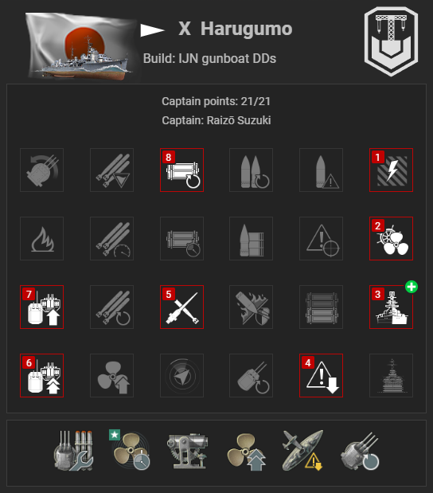
- Harugumo line DDs are firepower heavy gunboats with excellent HE DPM and hard hitting torpedoes. Poor maneuverability and floaty shells makes them tricky to use
- This is a general purpose build that allows IJN gunboats to both support friendly DDs in cap contests and effectively farm larger enemy ships
- Use the 12km torpedo option, 8km torps are too short range to be effective
- If you want even more firepower at the expense of risking your engine and rudder, swap LS for DE.
- Trade BFT for SI if you need the extra smoke for late game farming
- If you don’t have the Engine boost mod, use ERP.
- A Suzuki captain is a decent option for all IJN DDs due to his improved SE skill
- Suzuki can be purchased in the armory for 1,500 doubloons or 35k coal
- Applies to Harekaze (100mm gun hull), Akizuki, Kitakaze and Harugumo. Minekaze, Hatsuharu, and Shiratsuyu play like the IJN Torp DDs, see Shimakaze for their build
Harugumo
LM build
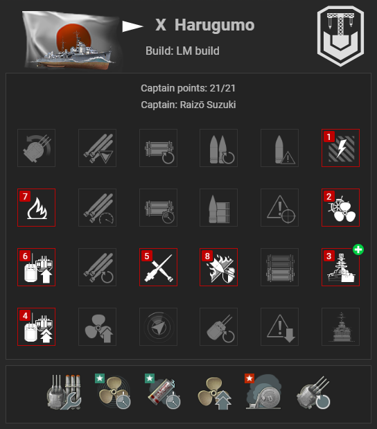
- This build is centred around Harugumo’s unique/legendary upgrade (a.k.a legmod). It lets you gain more smoke uptime for more effective damage output, but you lose some concealment and thus lose out on DD fighting potential
- Make sure you combine the legmod with the smoke generator upgrade and the smoke flag
- Note: This build works best when coordinating with clan or division mates, and may not yield you the best results in randoms.
- The buff to her UU does not change her build, nor her level of recommendation
- A Suzuki captain is a decent option for all IJN DDs due to his improved SE skill.
- If you don’t have the Engine boost mod, use ERP. If you don’t have the Smoke mod, use ASM1.
Hayate
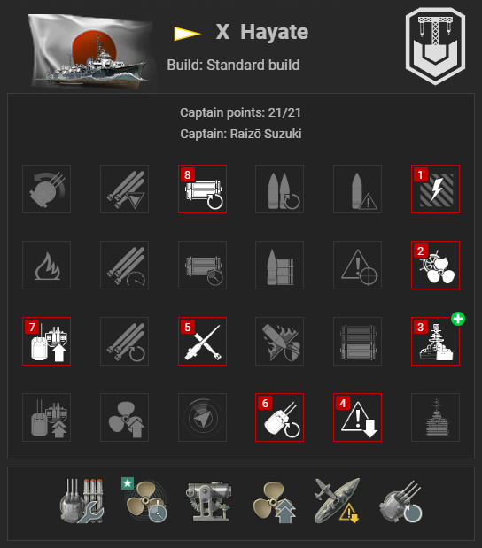
- Hayate is a solid all around universal DD with both respectable guns and powerful torpedoes. Keep in mind her 6.1km best conceal is on the high end for universal DDs
- This is a general purpose build that allows Hayate to both support friendly DDs in cap contests, as well as deal reasonable amounts of damage to larger ships.
- This build forgoes torpedo reloading skills as Hayate gets TRB
- If you feel like you could use some extra gun range, swap FB for AFT.
- A Suzuki captain is a decent option for all IJN DDs due to his improved SE skill.
- If you don’t have the Engine boost mod, use ERP.
IJN torpedoboat DDs (Shimakaze Line)
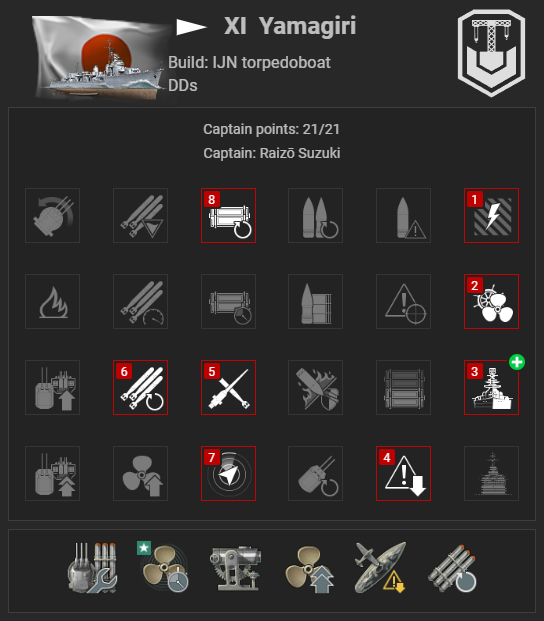
- The quintessential torpedo DD, combining deadly torps on a stealthy platform. Poor survivability and gun firepower hurts them in direct fights
- This is a torpedo focus build that allows IJN torpedoboat DDs to throw out more torps while using their superior concealment to contest caps
- Make sure you use the 12km Type 93 mod 3 torpedoes on Shimakaze and Yamagiri, as they are the best general-purpose torpedoes. If you’re feeling cocky, you may use the Type F3 torpedoes, but you will have to adopt a risky style of gameplay.
- Don’t use 20km Type 93 torpedoes, they miss too often due to their high detection
- Swap RPF for Swift in Silence if you find yourself repositioning often. You can also drop RPF and Liquidator and get BFT and Swift Fish for DD self-defense
- If you feel the turrets traverse is too slow, trade Consumable Specialist for GtG
- SE is a core skill for this build, more HP = more insurance against a bad fight or simple attrition, 17.9k HP is simply too low and you will get bullied away by other DDs
- A Suzuki captain is a good option for all IJN DDs due to his improved SE skill.
- The legendary upgrade for the Shimakaze is highly recommended, and does not change the build or the playstyle in any significant way.
- If you don’t have the Engine boost mod, use ERP.
- Applies to Umikaze, Wakatake, Tachibana, Isokaze, Mutsuki, Minekaze, Kamikaze, Fujin, Fubuki, Hatsuharu, Shinonome, Akatsuki, Shiratsuyu, Yuudachi, Kagero, Yukikaze, Asashio, Yugumo, Minegumo, Shimakaze and Yamagiri.
USN Universal-type DDs (Gearing Line)
Standard build
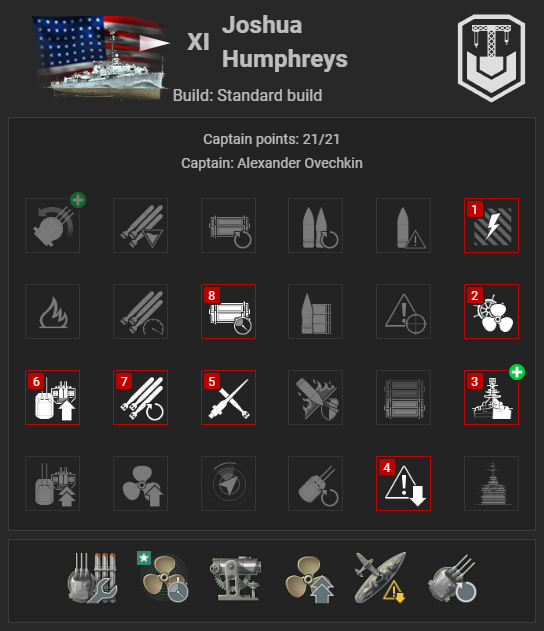
- This is a general purpose build that puts emphasis on both USN DDs’ weapon systems, allowing them to both contest caps reasonably well and deal damage to larger ships.
- Ovechkin is a good captain for all USN DDs because of his improved SE skill.
- Dedicated Tier 5-7 DDs can trade Fill the Tubes for IFHE to increase their HE pen to 26mm, allowing them to rapidly chew through T7 and below BBs
- If you don’t have the Engine boost mod, use ERP.
- Applies to Sampson, Wickes, Smith, Clemson, Nicholas, Hill, Farragut, Mahan, Sims, Benson, Fletcher, Gearing, Joshua Humphreys.
USN DDs (Gearing Line)
Torpedo build
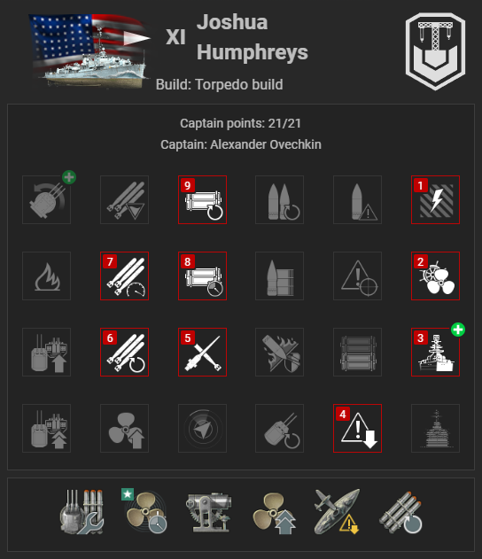
- The Gearing line undergoes an identity change as you progress up the line, starting as a close range gunboat line from Tier 2-6, transforming into a versatile universal DD line for Tier 7-9, and finally ending as a torpedo DD at Tier 10 Gearing
- This is a build that puts emphasis on the High tier USN DDs’ strong torpedoes, which reduces their cap contesting ability, but improves their damage output against larger ships.
- Gearing’s legendary upgrade is especially good with this build.
- Trade Swift Fish and Consumable Enhancement for RPF if you need the extra warning against other DDs
- Ovechkin is a good captain for all USN DDs because of his improved SE skill.
- If you don’t have the Engine boost mod, use ERP.
- Applies to Monaghan, Fletcher, Benham, Gearing, Somers and Joshua Humphreys.
USN Gunboat DDs (Burrows Line)
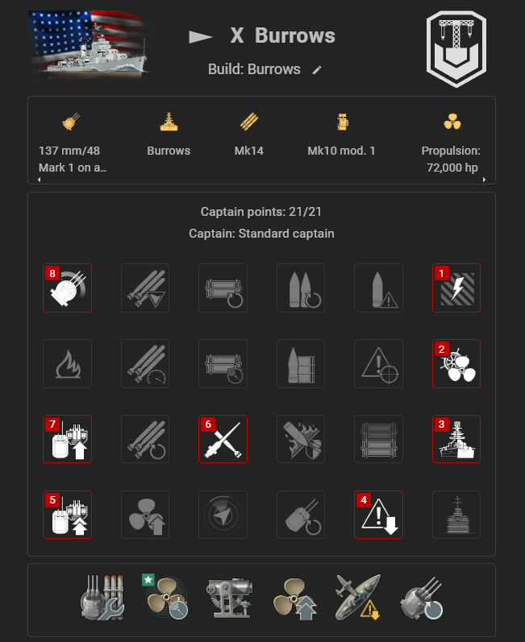
- The Burrows line are gunboat oriented DDs with good long range ballistics and SAP. She can also turn on/off smoke on demand, allowing for both quick disengages or extended farming depending on situation
- Be aware the minimum smoke usage time is 20s, and cooldown between uses is 25s
- Trade BFT and GtG for Fearless Brawler if you are confident in open water gunboating
- There is no way to extend smoke duration, don’t waste your smoke flags
- Ovechkin is a good captain for all USN DDs because of his improved SE skill.
- If you don’t have the Engine boost mod, use ERP.
- Applies to Hughes, Osborne, Christopher, and Burrows
Forrest Sherman
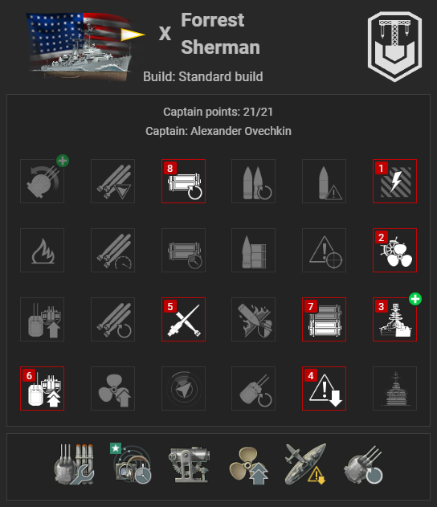
- Forrest Sherman is a rapid firing smoke gunboat with amazing SAP firepower, great long range ballistics, and hydro for defense. Slow speed makes her very squishy outside of smoke
- This build allows Sherman to support friendly DDs in cap contests, gives her a reasonable chance of fighting stealthier enemy DDs, and allows her to deal good amounts of damage.
- If you find yourself lacking the 3rd smoke charge very often, prioritise SI over AR.
- You may replace SI with BFT if you don’t find yourself using the 3rd smoke charge often.
- If you really lack the extra range, swap reload for range mod until you get enough points for AFT.
- Ovechkin is a good captain for all USN DDs because of his improved SE skill.
- If you don’t have the Hydro mod, use ERP.
VMF (Soviet) Gunboat DDs (Delny Line)
Standard build
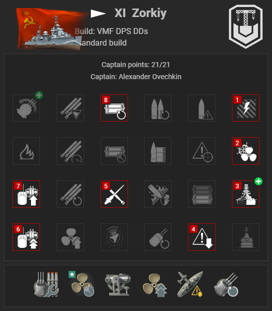
- Delny branch DDs are the tankiest of the gunboat lines thanks to their high HP pool and heals, while also retaining respectable firepower in their long range DD guns. High surface detection makes them unsuited for taking caps while poor maneuverability makes them vulnerable to torpedoes if not careful
- Delny, Khabarovsk, and Zorkiy get 50mm side armor, which will shatter all DD HE shells. Letting them dominate DD fights
- This is more of a traditional build that allows you to both support friendly DDs contesting objectives as well as farming damage off large enemy ships. This build is ideal for T2-7 DDs before the branch splits because their concealment is competitive with that of other universal-type DDs.
- If you're using the Repair on the high tier DDs, swap BFT for SI.
- Ovechkin is a good captain for all VMF DDs because of his improved SE skill.
- If you don’t have the Engine boost mod, use ERP.
- Applies to Storozhevoi, Izyaslav, Derzki, Podvoisky, Okhotnik, Gnevny, Gremyashchy, Minsk, Leningrad, Kiev, Udaloi, Tashkent, Delny, Khabarovsk and Zorkiy.
VMF DDs DPS branch
Damage build
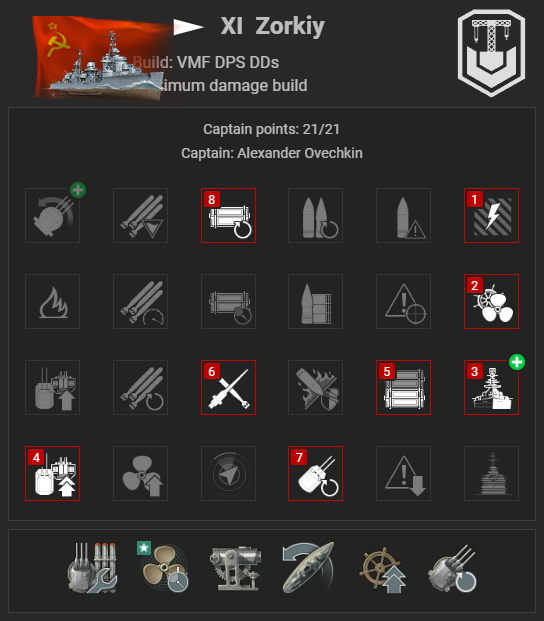
- This build gives up all concealment in favor of maneuverability, and is optimised for dealing maximum amounts of damage to large enemy ships.
- You can trade Steering gears in slot 5 for Concealment Module for better positioning or to support other DDs
- Ovechkin is a good captain for all VMF DDs because of his improved SE skill.
- If you don’t have the Engine boost mod, use ERP.
- Applies to Delny, Khabarovsk and Zorkiy. You can also use this on Kiev and Tashkent, but your game impact may suffer as a result.
VMF universal-type DDs (Grozovoi Line)
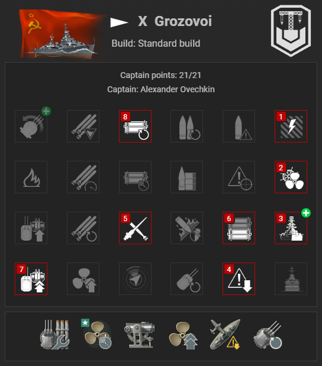
- Grozovoi branch are a mishmash of DDs with different playstyles, only tied together by nation and ship class
- This build is a standard build that allows Grozovoi to both contest objectives and deal damage to large enemy ships. This build is suboptimal for Ognevoi and Udaloi, but you can use it if you don’t feel like retraining your captain when moving ships
- For a dedicated Udaloi captain, use the Delny build
- If you feel like you don’t need the extra range for gunboating and dealing damage, swap AFT for BFT, drop CS and spec into Consumable Enhancement with the leftover 2 points.
- For a full farming build, which is suboptimal for game impact, you can give up CE for FB.
- Using the legendary upgrade on Grozovoi is still highly recommended, but beware it will bump your conceal upto 6.7km. This will significantly change your DD matchups as you can't bump spot stealthier DDs now
- Ovechkin is a good captain for all VMF DDs because of his improved SE skill.
- If you don’t have the Engine boost mod, use ERP.
Ognevoi
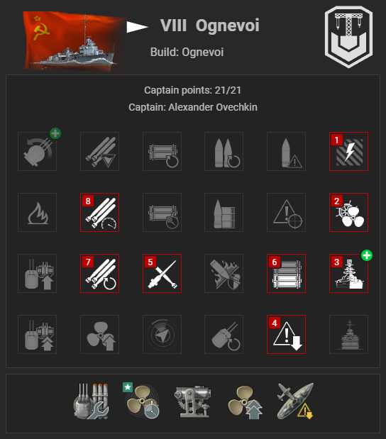
- Ognevoi is a torpedoboat, so her optimal build is different from the rest of the branch. This build gives her optimal balance of the ability to contest objectives and deal damage with torps.
- Ovechkin is a good captain for all VMF DDs because of his improved SE skill.
- If you don’t have the Engine boost mod, use ERP.
KM (German) universal-type DDs (Z-52 line)
Contesting build
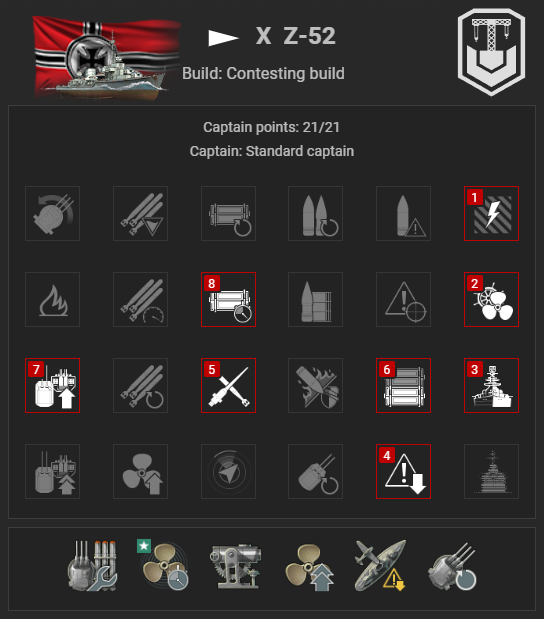
- Z-52 branch are Universal DDs with long range hydro, powerful AP, and 32mm HE pen, at the cost of low HE DPM and shorter smokes
- This build maximises German DDs’ hydro + smoke combo in order to win games by controlling objectives.
- If you don’t have the Engine boost mod, use ERP.
- Note: the Hydro mod is not recommended because it causes desync between the smoke and hydro action time and cooldown. Something you don’t want, so more engine boost uptime is for better dodging and repositioning.
- Applies to V-25, G-101, V-170, T-22, Gaede, T-61, Maass, Z-39, Z-23, Z-35, Z-46 and Z-52.
KM universal-type DDs
Balanced build
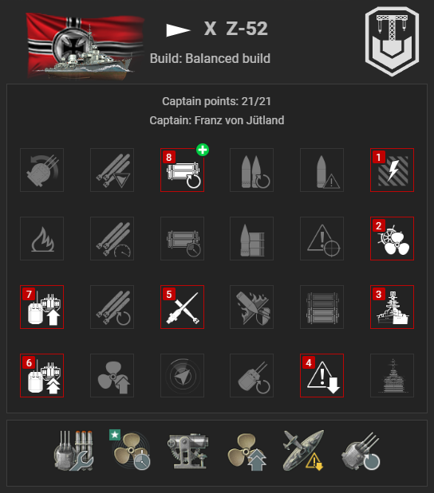
- This build makes use of KM DDs’ decent ballistics and high HE pen in order to enable them to deal more damage to larger enemy ships, while retaining their great contesting ability.
- If you don’t have the Engine boost mod, use ERP.
- Jütland is decent for this build because of his improved Consumable Specialist skill.
Z-52
LM build
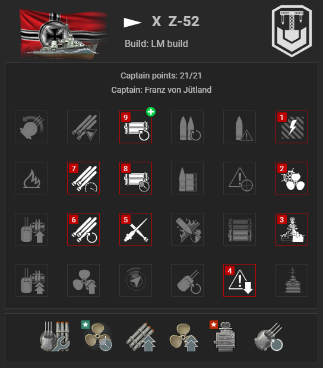
- This build makes use of Z-52’s legendary upgrade in order to allow her maximum effectiveness with torpedoes.
- Beware the increased surface detection makes caps more dangerous to contest
- For those wondering, the Engine boost mod is preferred to the Hydro mod because extending your hydro duration increases the desync between your smoke and hydro duration and cooldown, while Engine boost mod lets you dodge enemy fire and move quicker for a longer time. If you don’t have the Engine boost mod, use ERP.
- Jütland is decent for this build because of his improved Consumable Specialist skill.
Z-42
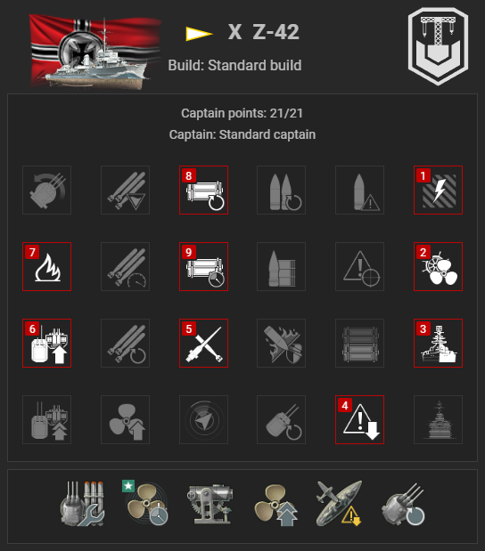
- This build allows Z-42 to strike an optimal balance of contesting objectives and farming larger ships.
- For those wondering, the Engine boost mod is preferred to the Hydro mod because extending your hydro duration increases the desync between your smoke and hydro duration and cooldown, while Engine boost mod lets you dodge enemy fire and move quicker for a longer time. If you don’t have the Engine boost mod, use ERP.
KM gunboat DDs (Elbing Line)
Standard build
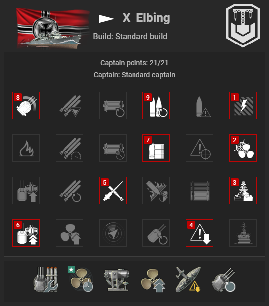
- Elbing line DDs are long range AP gunboats, preying on broadside cruisers and BBs who don’t respect her superb accuracy and lightning fast shells
- This build allows KM gunboat DDs to both support friendly DDs contesting objectives, as well as farm damage off large ships.
- Considering the vast majority of German gunboat DDs’ damage comes from AP, HAP is preferred to BFT (7.5% AP DPM and alpha damage bonus vs 5.5% DPM bonus)
- If you’re making a dedicated captain for Z-31 or Maerker, BFT is an option instead of AFT. You can put the leftover point into IFA or drop EL and pick DE or PT.
- If you don’t have the Engine boost mod, use ERP.
- Applies to Z-31, Maerker, Schultz and Elbing.
KM DPS DDs
Farming build
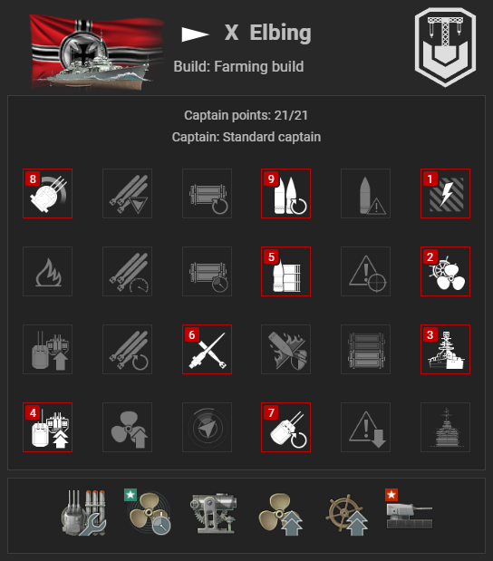
- This build gives up any semblance of concealment in order to gain maximum damage output. Elbing works well with this build thanks to her amazing shell ballistics and extra dodging ability though her legendary upgrade
- Trade GtG or PM for IFA if you have trouble timing your dodges
- For Schultz, and Elbing if you don’t have the legendary upgrade, use MBM3 in slot 6.
- Legendary upgrade is still highly recommended even after the nerf
- If you don’t have the Engine boost mod, use ERP.
- Applies to F. Schultz and Elbing.
Georg Hoffmann
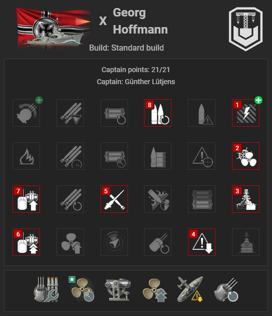
- Hoffman is a cross between the Elbing and Z-52 playstyle. Carrying the ballistics and hull of the former(technically Schultz hull) with the hydro and weak smoke of the latter
- This build puts emphasis on Hoffmann’s main strength, which is her guns.
- For those wondering, the Engine boost mod is preferred to the Hydro mod because extending your hydro duration increases the desync between your smoke and hydro duration and cooldown, while Engine boost mod lets you dodge enemy fire and move quicker for a longer time. If you don’t have the Engine boost mod, use ERP.
RN DDs (Daring Line)
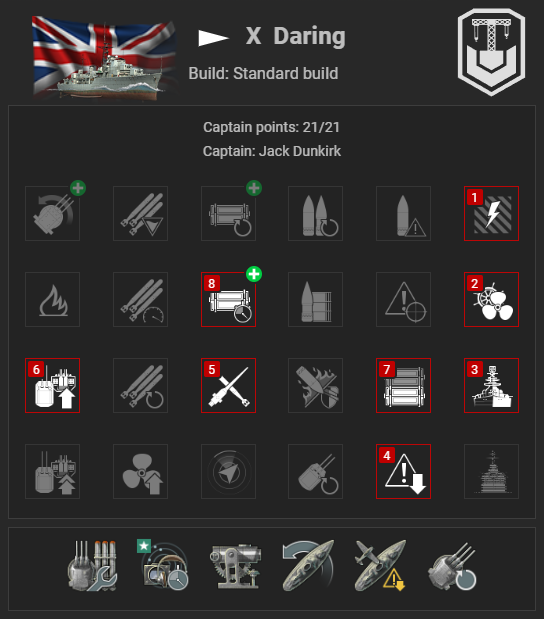
- RN DDs are great cap contesters whose short smokes, hydro, and improved acceleration makes them notably harder to kill than other DDs
- This build enables RN DDs to fight over objectives and deal some damage to larger ships.
- If you don’t have the Hydro mod, use ERP.
- Applies to Medea, Valkyrie, Wakeful, Acasta, Icarus, Jervis, Lightning, Cossack, Jutland, Somme and Daring.
Druid
Standard build
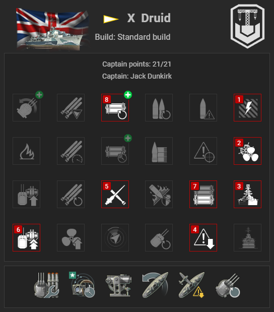
- AP gunboat DD with an all-forward armament and RN DD consumables
- This build is optimised for farming damage off large ships from a safe distance, while still allowing you to fight enemy DDs and support friendly DDs to some extent.
- Heavy AP is not taken simply because there is no room left unless you are willing to sacrifice survivability like SE
- If you don’t have the Hydro mod, use ERP.
- Dunkirk is decent for this ship due to his improved Consumable Specialist skill.
Druid
Damage build
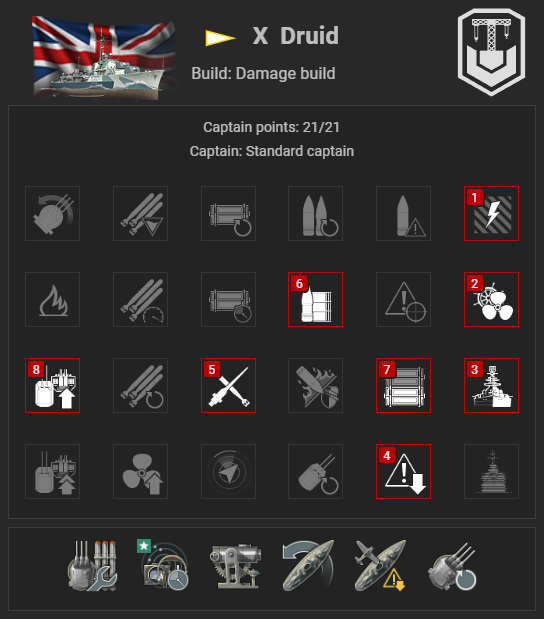
- This build gives up range for maxing out on firepower in a reasonable way, but as it gives up range it requires a more skilled player and is riskier to play
- If you still feel like you’re not getting much use out of having extra conceal, pick AFT or Fearless Brawler instead.
- If you don’t have the Hydro mod, use ERP.
FR gunboat DDs (Kleber Line)
Standard build
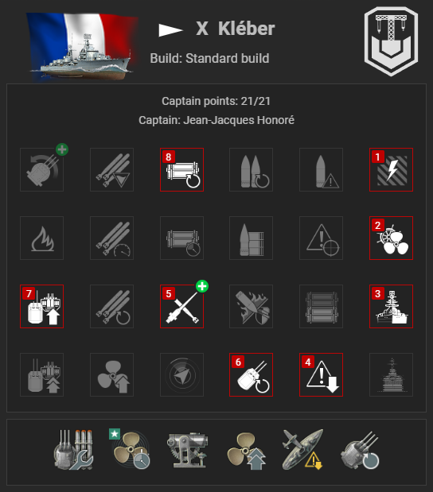
- High speed open-water gunboats with great maneuverability, MBRB to provide temporary increase in firepower, and unique French saturation mechanic that reduces damage further if a ship section is already damage. No smoke makes disengaging from fights difficult
- This build focuses on maxing out concealment and rate of fire in order to have the best chances of catching enemy DDs, capping unguarded caps and torping enemies pushing towards you.
- You can swap BFT+CS for AFT if you want to put more emphasis on long-range farming.
- Honore is a decent captain because of his improved AR skill. Auboyneau is also good because of his improved SE skill and the capture talent.
- If you don’t have the Engine boost mod, use ERP (it’s practically mandatory)
- Except for Kleber. Just cough up the 17k coal to buy Engine boost mod. You will greatly suffer without it
- Applies to Enseigne Gabolde, Fusilier, Bourrasque, Jaguar, Siroco, Guépard, Aigle, Vauquelin, Le Fantasque, Le Terrible, Mogador, Kléber
Kléber, Mogador
Damage build
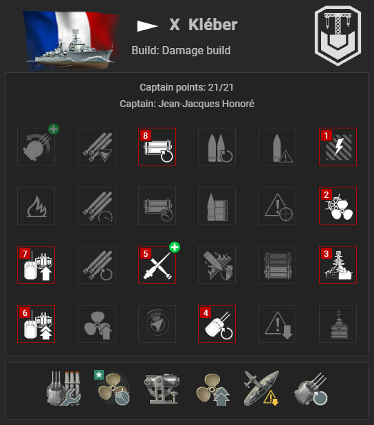
- This build aims to increase your damage output as much as possible, giving up almost any semblance of objective control. Beware, this build is not optimised for winning games.
- If you want to farm and dodge even harder, drop conceal mod for steering.
- Honore is a decent captain because of his improved AR skill. Auboyneau is also good because of his improved SE skill and the capture talent.
- If you don’t have the Engine boost mod, use ERP (it’s practically mandatory).
Kléber
Unique Upgrade build
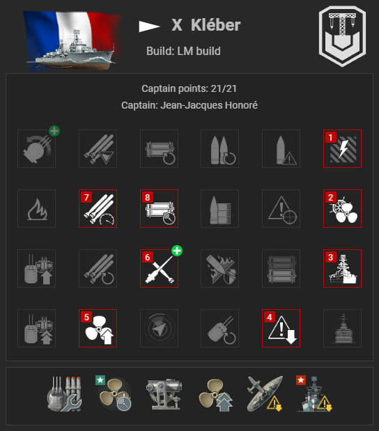
- This build is centered around Kleber’s unique/Legendary upgrade. You will rarely be using your guns, and it is all about repositioning as quickly as possible to wherever you’re needed.
- More of a meme build in randoms, but LM Kleber is a staple of competitive whenever she is allowed
- Honore is a decent captain because of his improved AR skill. Auboyneau is also good because of his improved SE skill and the capture talent.
- If you don’t have the Engine boost mod, use ERP (it’s practically mandatory).
Marceau
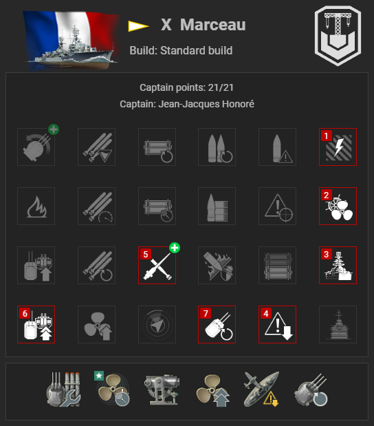
- Close range high DPM version of Kleber, better concealment and permanent MBRB in terms of DPM, but slower shell ballistics and worse torps
- This build allows Marceau to have both good damage output, as well as allowing for some objective play.
- Trade AFT for BFT and Consumables Specialist/IFA if you don’t need the extra gun range
- You can also use this build on Mogador and Kleber.
- Honore is a decent captain because of his improved AR skill. Auboyneau is also good because of his improved SE skill and the capture talent.
- Engine boost mod is practically mandatory. If you can afford the 260k coal ship, you can also afford the 17k coal upgrade
FR torpedoboat DDs (Cassard Line)
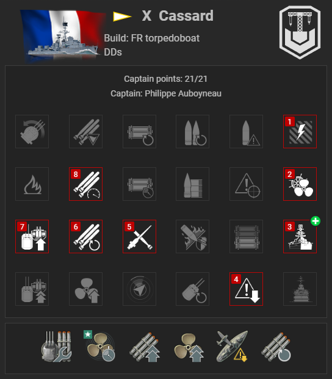
- Aka. Cassard line
- Torpedo focus line whose long range torps deal more damage when closer to the target. Also gets French saturation mechanics, but also no smoke
- This build focuses on the main strength of these DDs, which is their torpedoes, while retaining some ability for self-defence.
- Honore is a decent captain because of his improved AR skill. Auboyneau is also good because of his improved SE skill and the capture talent.
- If you don’t have the Engine boost mod, use ERP (it’s practically mandatory).
- Applies to L’Adroit, Duchaffault, Le Hardi, L’Aventurier, Orage and Cassard.
PA DDs (Yue Yang Line)
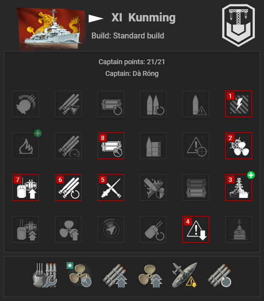
- Torpedo DDs with unique Deepwater torps that only hit cruisers, BBs, and CVs, but in exchange get greatly reduced detection. Also carries Pan-Asia smoke or radar (radar starting at Tier 8). However their gun firepower is notably lacking
- Mid-tier DDs are more versatile DDs with good gun firepower for their tier
- This build focuses on the main strength of these DDs, which is their torpedoes, while retaining some ability for self-defence.
- Rong is a decent captain because of his improved SE skill. Sa Zhenbing is also good because of his improved Consumable Enhancement skill and the torpedo talent.
- If you don’t have the Engine boost mod, use ERP
- UU Yue Yang is recommended for radar builds to fight other DDs
- Applies to Longjiang, Phra Ruang, Jianwei, Shenyang, Fushun, Gadjah Mada, Hsienyang, Chung Mu, Yueyang, Kunming
Lüshun
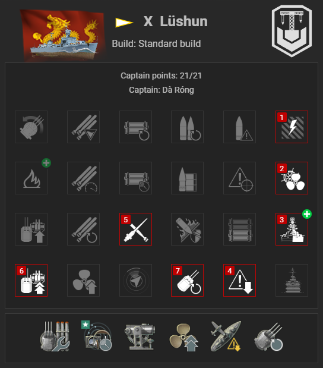
- Well rounded DD with good long range gun DPM, hydro, and superheal. Poor maneuverability and no smoke offsets her good concealment
- This build makes the most of Lushun’s great firepower and good concealment, allowing you to both contest objectives and farm damage.
- If you think you don’t need the extra range on your mian guns (which is highly recommended due to this ship’s low top speed and large size), swap AFT for BFT and CS.
- If you don’t feel comfortable with only 3 Repairs (which are already really strong and you will rarely need more than 3), you can swap either of the 4 point gun skills for SI and CS.
- Your heal recovers HP slowly, so start it early if you are expecting a fight
- Rong is a decent captain because of his improved SE skill.
- If you don’t have the Hydro mod, equip ERP.
EU torpedoboat DDs (Halland line)
Standard build
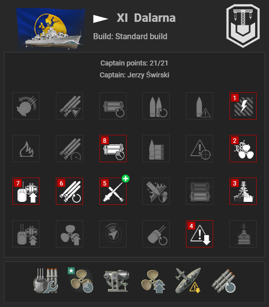
- The Halland DD line are anti-air and torp focused DDs. Has extremely fast torps, heal, and excellent AA, but suffers from slow top speed and low damage on her torps
- This build gives EU DDs a good balance of gun and torpedo power, allowing them to both fight for objectives and threaten larger ships.
- FB is a viable alternative for better gun DPM, trade BFT and Consumable Enhancement and get Consumables Specialist
- SI is useful if you prefer late game survivability, either trade BFT or Fill the Tubes
- Swirski is a decent captain because of his improved AR skill and the torpedo talent.
- If you don’t have the Engine boost mod, equip ERP.
- Applies to Tatra, Romulus, Klas Horn, Visby, Vasteras, Skane, Öland, Östergötland, Halland and Dalarna.
EU torpedoboat DDs
Torpedo build
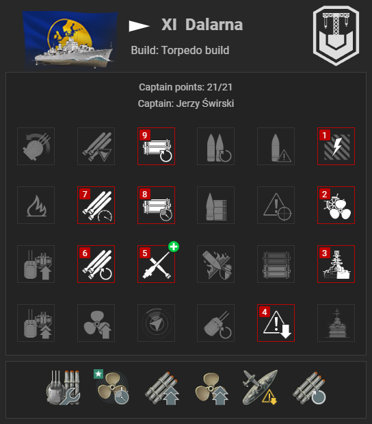
- This build maximises EU DDs’ torpedo power, making large enemy ships their primary targets.
- Swirski is a decent captain because of his improved AR skill and the torpedo talent.
- RPF for predicting movement or SiS for faster speed are viable alternatives, you will need to trade Swift Fish and Consumables Enhancement
- If you don’t have the Engine boost mod, equip ERP.
- Applies to Tatra, Romulus, Klas Horn, Visby, Kalmar, Västerås, Skåne, Öland, Östergötland, Halland and Dalarna.
Dalarna
Gun build
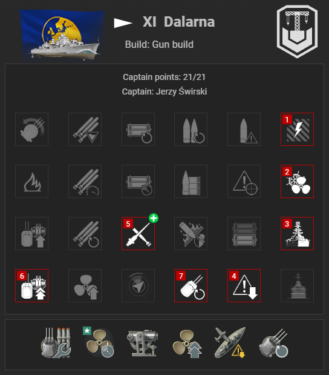
- Dalarna had pretty decent guns by default, which allows for a gun build. This build is best played around objectives, fighting enemy DDs and farming damage off large enemy ships.
- Swirski is a decent captain because of his improved AR skill and the torpedo talent.
- If you don’t have the Engine boost mod, equip ERP.
Halland Unique Upgrade
LM build
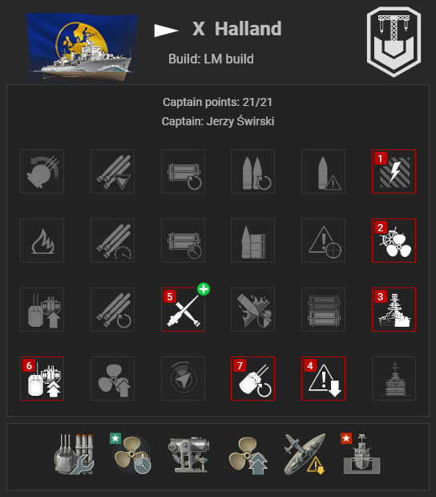
- The legendary upgrade is tailored to turn Halland into a relatively tanky hybrid DD, which this build tries to get the most out of. This build is best played when fighting over objectives and farming damage on large enemy ships. Do note that SI is not recommended simply because you will rarely get to use all 5 repairs on a DD.
- Swirski is a decent captain because of his improved AR skill and the torpedo talent.
- If you don’t have the Engine boost mod, use ERP.
EU Gunboat DDs (Gdansk line)
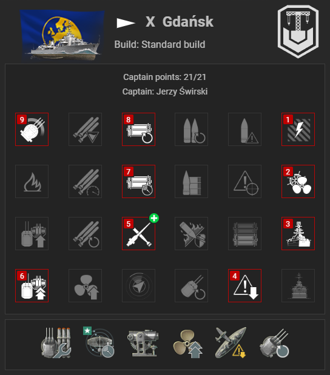
- The Gdansk line sports the unique combination of objective control and damage farming thanks to their radar and powerful mid-long range guns respectively. However, they are relatively fragile with short duration radar and no AP.
- This build allows EU DDs to have good objective control in random battles, while also allowing them to use their awesome firepower against larger enemy ships.
- You can pick SI instead of the consumable buffing skills or BFT if you think you need more charges of radar and engine boost.
- Swirski is a decent captain because of his improved AR skill and the torpedo talent.
- Radar mod is used to squeeze in 1 more salvo, if you don’t have it, use ERP.
- Applies to Muavenet, Stord, Grom, Split, Lambros Katsonis and Gdansk.
Småland
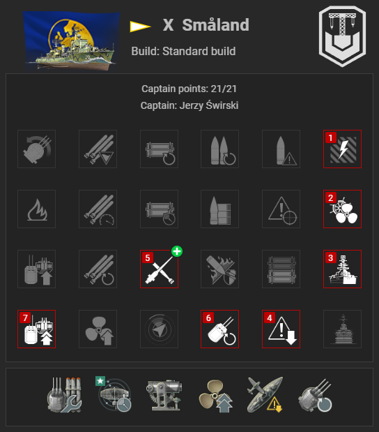
- Close range radar gunboat DD. Can bully around other DDs with radar while speed boost and heal lets her survive multiple engagements
- This is a balanced build that allows Småland both good objective control, as well as some damage farming capabilities.
- Småland has lots of build options which I will cover here instead of making a dedicated build for each and bloating this document:
- If you want to maximise your damage output, you can drop CE for BFT+CS and still keep your stealth radar (6.8 km conceal vs 7,5 km radar).
- If you want to max out on objective control, drop AFT for RPF and engine boost mod for radar mod.
- If you want to max out on survivability, drop AFT for SI+CS.
- If you want to max out on close range fighting potential while sacrificing range, drop AFT for BFT+CS
- Swirski is a good captain because of the improved AR and the torpedo talent.
- If you don’t have the Radar mod, use ERP. But tbh, if you bought/whaled for Smaland, you can afford to spend 17k coal for radar mod
- Engine boost mod is also fine for damage focus builds
Ragnar
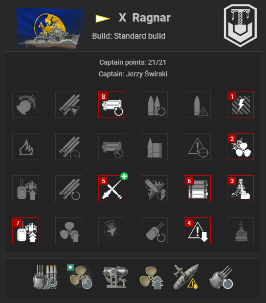
- Long range gunboat with super-accurate cruiser guns and 7.5km radar for the occasional DD fight. Low survivability due to poor maneuverability
- This is a versatile build that allows Ragnar to do both objective control damage farming
- If you need the extra range and don’t have enough points for AFT, swap reload for range mod.
- For full damage farming build, trade CE for FB, but this gives up your stealth radar
- Swirski is a good captain because of the improved AR skill.
- Engine boost mod > Radar mod. 30s radar is long enough and it’s usually too dangerous to chase DDs to keep within your full radar duration anyways
- If you don’t have the Engine boost mod, use ERP. But if you can afford 30k steel, you can afford a 17k coal mod for her
Italian DDs (Attilio Regolo Line)
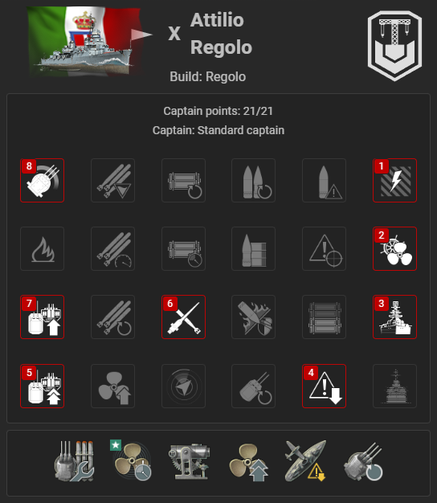
- Close range SAP slinging DDs with exhaust smoke to instantly disengage from fights. Also has emergency speed boost for short term dodging, but suffers from terrible base gun range and mediocre concealment range
- This build puts emphasis on IT DDs’ great firepower and compensates for their inherent lack of gun range.
- If you're making a dedicated build for Tier 8 and below DDs, swap FB for SI due to the low amount of smoke and engine boost charges.
- AFT is mandatory even for mid-tier DDs. Extra gun range gives you versatility to fight bigger ships once all the DDs are dead. Unless you are fine with watching your HP get chipped away by non-secondary BBs
- Make sure to use the smoke flag if you have any to spare.
- Sansonetti is a very good captain for these DDs as it is easy to activate his talent that extends their short gun range. Ignore his improved skills because they don’t make your ship any better than the optimal build with a standard captain.
- If you don’t have the Engine boost mod, use ERP.
- Applies to Curtatone, Nazario Sauro, Turbine, Maestrale, Aviere, Luca Tarigo, Vittorio Cuniberti, Adriatico, Paolo Emilio and Attilio Regolo.
Vampire II
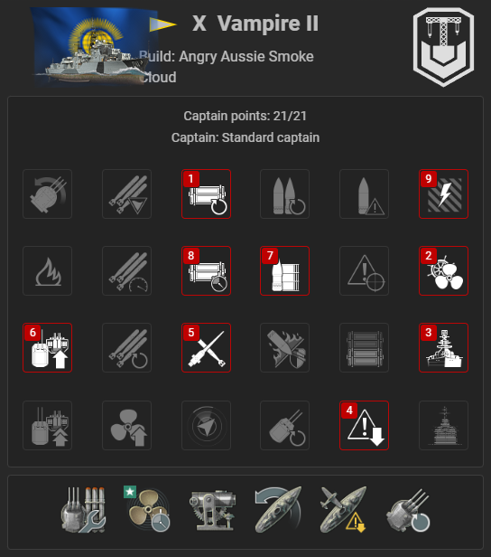
- Great short range gunboat with a unique creeping smoke and 5km hydro
- Her crawling smoke is a double-edge sword. Great for crawling to avoid blind fire, but the inability to turn off will back fire if used carelessly.
- The smoke cooldown does not start until the last puff. Further emphasizing the need for intelligent smoke use, lest you are crippled by its long cooldown
- This build puts emphasis on Vampire’s consumables and guns, allowing her great objective control.
- You can drop the 2 pt skills for RPF if you want to focus on hunting enemy DDs. In which case you can share the build with Haida.
- Slot 3 Smoke Generator is not used since it provides more smoke than you need. Same reason why SI is not recommended
- If you don’t need the slightly extra smoke duration, trade consumable enhancement for PT or DE
- If you don’t have the Engine boost mod, use ERP.
Tromp
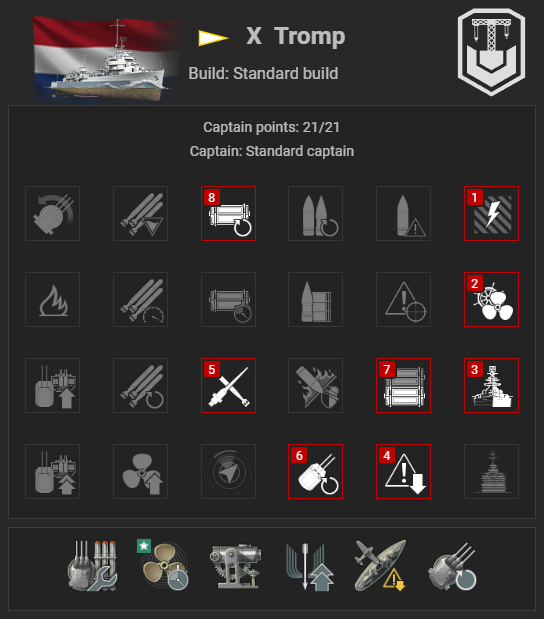
- Unique Dutch DD that can launch 12km airstrikes, still competent at DD roles thanks to her great concealment and respectable firepower. Be careful when taking direct fights as Tromp easily takes damage if speed boost is not available
- If you don’t feel like you need the extra engine boost from SI, feel free to swap it for BFT.
- If you feel like you’re not getting enough out of the airstrike upgrade, swap it for the propulsion upgrade.
- If you don’t have the Engine boost mod, use ERP.
Álvaro de Bazán
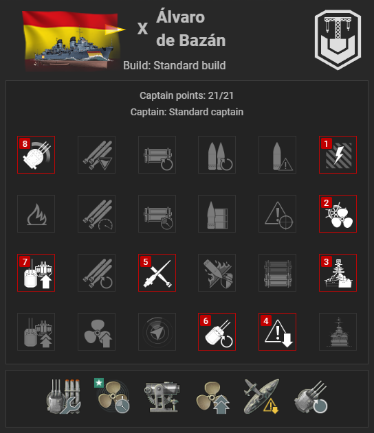
- Versatile Spanish DD with a powerful burst fire option on her excellent guns
- This build allows you to both deal good amounts of damage and play around objectives.
- If you feel like you lack range, replace BFT + EM with AFT.
- If you don’t have the Engine boost mod, use ERP.
La Pampa
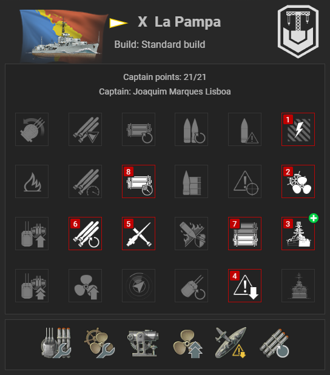
- Torp heavy DD that can fire 15 torps per salvo, and up to 30 with TRB. Combat instructions reduces all consumable cooldown when activated. However, poor gun DPM leaves you almost helpless in a gunfight and 10.5km torp range feels short at times
- This build focuses on buffing La Pampa’s torpedoes and consumables.
- If you struggle in encounters with enemy DDs, you can swap FTT and consumable enhancement for RPF and CS.
- Lisboa is a decent captain due to his improved SE skill and his Combat Instructions talent.
Cruisers
IJN CAs (Zao line)
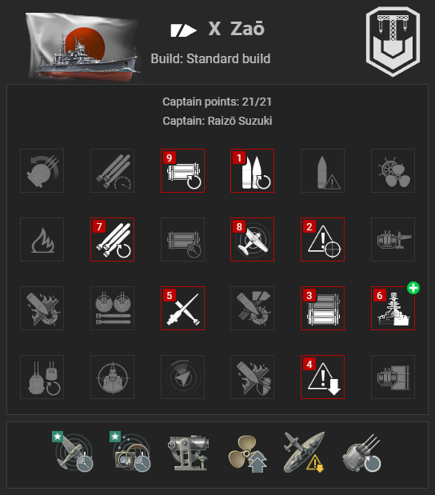
- Damage farming kiting cruiser line. Sports powerful HE, improved gun accuracy, and has long range torps but struggles with short gun range and relatively fragile
- This build allows IJN CAs to support DDs in contesting objectives, as well as use their torps for area denial against enemy ships pushing towards you.
- Make sure you use the 12 km range torpedoes (Type 93 mod 3), not the 8 km ones.
- You may swap PT for LS on cruisers lower than Zao as they tend to lose their steering gears to even cruiser calibre HE.
- You can use Suzuki for his improved SE skill.
- If you don’t have the Spotter mod, or when it’s not applicable, use MAM1. If you don’t have the Hydro mod, use ERP.
- When dodging BB shells, avoid showing a completely flat stern to the shells. IJN cruisers are notorious for getting citadeled though the aft
- Applies to Chikuma, Tenryu, Kuma, Furutaka, Aoba, Myoko and ARP clones, Atago, ARP Takao, Mogami, Ibuki and Zao.
IJN CLs (Yodo Line)
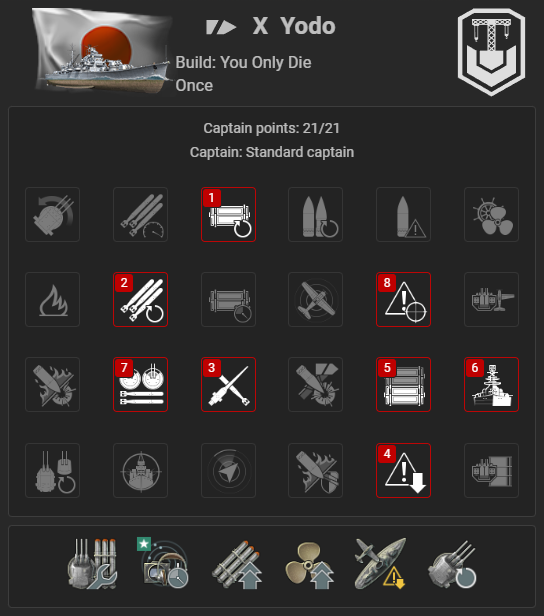
- Torpedo focused kiting cruisers with powerful long range torps and a strong HE salvo. High detection on her torps and floaty shells makes them difficult to use against aware enemies
- This build puts emphasis on both of the IJN CLs’ weapon systems in order to maximise damage output in a reasonable way.
- Yodo takes MBM3 in slot 6 to apply more consistent damage between torp salvoes
- Given the rather large size of the high tier ships, their above average HP pool, subpar agility and concealment that is too good for the firing range she has, swapping Conceal mod for Steering mod 2 is an option.
- If you don’t have the Hydro mod, use ERP.
- Most ships in the line gets 360° turrets, take advantage of this by maneuvering side to side while you fire torps on both sides of your ship. This makes you difficult to hit while maximizing your firepower
- Applies to Yahagi, Agano, Gokase, Omono, Shimanto, Takahashi and Yodo.
Azuma/Yoshino
Standard build
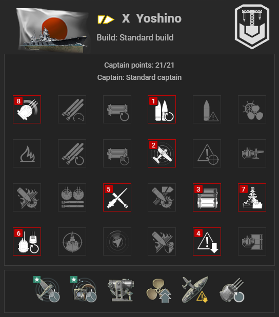
- Yoshino is a Long range damage kiting cruiser. Powerful HE salvo, high HP, and 20km torps makes her easy to play. Though be aware of her vulnerable citadel and poor maneuverability
- T9 Azuma is very similar. But trades her torps for fast reloading heal instead
- This build is for players who prefer to fight closer up to get better AP salvoes or strikes on DDs, or don’t feel comfortable with giving up concealment.
- You can share builds with Zao if you don’t want a dedicated captain
- Using the 20km torps on Yoshino is the preferred option simply because you’re playing at mid to long range most of the time, and they can be solid for area denial or hitting the occasional unexpected torp on unsuspecting enemy BBs.
- If you don’t have the Spotter mod, use MAM1. If you don’t have the Hydro mod, use ERP.
Yoshino
Damage build
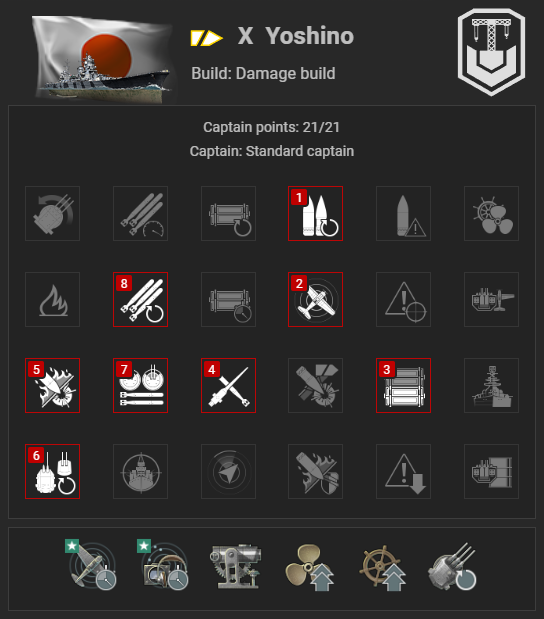
- This build maximises damage output from all of Yoshino’s weapon systems, completely giving up on concealment. You will have to play from a longer range compared to the standard build, and won’t be able to control your engagements as well.
- If you are not comfortable with having such a huge detection range, swap the steering upgrade for the concealment upgrade.
- If you don’t have the Spotter mod, use MAM1. If you don’t have the Hydro mod, use ERP.
Kitakami
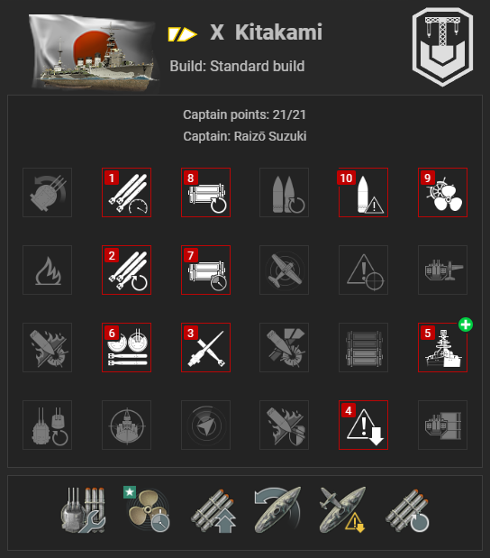
- Torp focused cruiser that can switch between 20km Asashio deepwater torps and 12km standard torps. Extremely fragile ship that requires judicious use of her smoke and speed boost to survive the inevitable focus fire
- Torpedoes are reloaded 1 rack at a time, per side
- 20km deepwater torps only hits BBs and CVs
- This build goes all-in on her torps. Guns are practically useless and not worth investing in. You will regularly lose gunfights against non-gunboat DDs. That’s how bad they are
- If you feel like you don’t have enough consumable charges, swap the consumable skills for SI.
- For maximum psycological impact, apply gold or steel camo.
USN CAs (Des Moines Line)
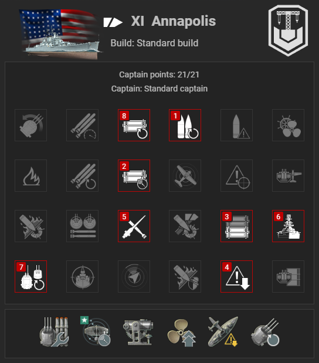
- Close - Mid range cruisers with great firepower and powerful radar at the expense of poor citadel protection. AP has improved pen angles and will eat though broadside ships
- This build is optimised for maximum game impact by using your radar and fighting enemy ships at medium and close range.
- The legendary upgrade is highly recommended for Des Moines and should be one of your top priorities. It pushes DM to a whole new level.
- Make sure you run hydro on Salem, not radar.
- Exceptions: Anchorage should use the spotter plane consumable and upgrade.
- Both Doe brothers and Halsey are very good captains for USN CAs, both due to their improved skills, and talents. See here for a ship priority list for this captain.
- In case a ship doesn’t have radar or you don’t have the Radar mod, use ERP or Hydro mod in slot 2.
- Applies to Pensacola, New Orleans, Indianapolis, Baltimore, Wichita, Anchorage, Rochester, Buffalo, Tulsa, Des Moines, Salem and Annapolis.
Salem
Damage build
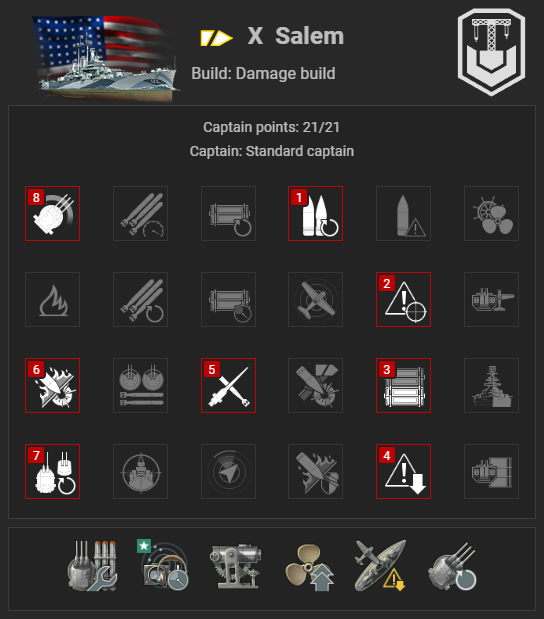
- Salem is a Des Moines that has superheal in exchange for worse radar and lack of unique upgrade option. In practice, Salem trades utility for stronger close range abilities
- This build puts maximum emphasis on Salem’s damage output, which is made possible by her improved Specialized Repair Teams consumable. You won’t be able to control your engagements as well as with the standard build.
- Both Doe brothers and Halsey are very good captains for USN CAs, both due to their improved skills, and Halsey’s talents.
- Hydro > Radar due to torp hits negating your superheal amount and Salem carrying a weaker 8.5km radar.
- If you don’t have the Hydro mod, use ERP.
USN CLs (Worcester Line)
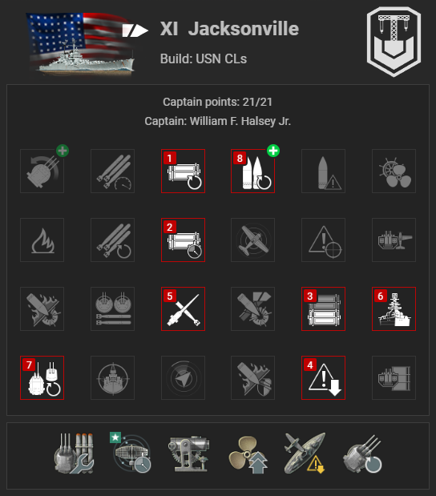
- This build is optimised for maximum game impact by using your radar and fighting enemy ships at medium and close range.
- If you are making a dedicated build for tier 6 and 7 CLs, use IFHE instead of TGG, and replace consumable enhancement with DE.
- Both Doe brothers and Halsey are very good captains for USN CLs, both due to their improved skills, and Halsey’s talents.
- In case a ship doesn’t have radar or you don’t have the Radar mod, use ERP or Hydro mod in slot 2.
- Applies to Chester, St. Louis, Charleston, Phoenix, Omaha, Marblehead, Dallas, Helena, Boise, Cleveland, AL Montpelier, Seattle, Worcester and Jacksonville.
Belfast ‘43, Belfast, Irian,, Duca d’Aosta and Duca degli Abruzzi.
Worcester
LM build
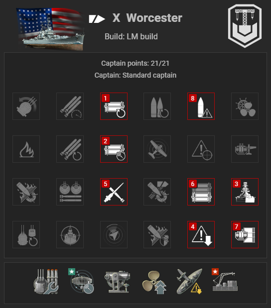
- This build is tailored around Worcester’s legendary upgrade and does not work otherwise. Its main selling point is increased AA power and survivability at the expense of damage output, but it doesn’t change the default playstyle all that much.
- If you don’t have the Radar mod, use ERP.
Austin
- Very fragile CL that obliterates poorly armored ships with unlimited MBRB and SAP shells. While she excells at bursing down unprepared enemies, she is extremely vulnerable to return fire herself.
- This build is tailored around the usage of Austin’s reload booster and massive firepower.
- If you don’t have the Hydro mod, use ERP.
VMF CAs (Petropavlovsk Line)
- Petropavlovsk branch are tanky cruisers with very strong AP shells that can even citadel BBs at mid range. Strong armor and radar rounds out her versatile kit, but they suffer from poor maneuverability, lackluster HE, and bad long range accuracy
- This build also applies to most Large Cruisers (Cruisers with big guns of 283mm or larger) which have similar characteristics across the board (great ranged firepower, strong AP shells, high survivability).
- Do note that the German battlecruisers can’t mount radar mod and should mount ERP or hydro mod instead.
- Znamensky is a good captain on Soviet battlecruisers because of the improved GtG skill. USN battlecruisers should be using one of the Doe brothers or Halsey as their captain due to greatly benefiting from improved EL and GtG.
- Take Heavy AP over SI if you are willing to trade some survivability for even better AP
- Due to how range mod interacts with Petro’s unique dispersion curve, it significantly delays the vertical dispersion penalty and is worth taking. Reload mod is perfectly fine as well if you are constantly fighting below 10km
- Applies to Riga, Kronshtadt, Petropavlovsk, Stalingrad, Novosibirsk, Graf Spee, Schill, Siegfried, Ägir, Congress, Alaska and Puerto Rico.
Sevastopol
- Fast Battlecruiser with accurate 381mm guns and a long lasting repair party. Excellent at punishing broadside ships and difficult to kill, but low DPM makes it harder to sink uncooperative enemies
- Heavy Repair party slowly heals over 60s. Use near the start of an engagement or if you are on fire/flood
- Znamensky is a decent captain for Sevastopol due to his improved GtG.
- If you don’t have the Engine boost mod, use ERP.
Moskva
- Well armored tanky cruiser with railguns and 12km radar. Very high surface detection and a notoriously vulnerable citadel severely limits her positioning ability
- Legendary mod is highly recommended, improved accuracy and range complements her long range playstyle and is the preferred upgrade for competitive settings (provided your team uses Moskva in competitive).
- For Clan Battles, trade PT and GtG for SE
- Znamensky is a decent captain for Moskva due to his improved GtG.
- If you don’t have the Radar mod, use ERP.
VMF CLs (Nevsky Line)
- This build is tailored around the high tier Soviet CLs (Chapayev, Donskoi, Nevsky) using their radar and firepower to control objectives.
- If you are making a dedicated build for tier 6 and 7 CLs, use IFHE instead of TGG, and replace PT with DE.
- In case a ship doesn’t have radar or you don’t have the Radar mod, use ERP or Hydro mod in slot 2.
- Applies to Novik, Aurora, Bogatyr, Svietlana, Krasny Krym, Kotovsky, Budyonny, Makarov, Shchors, Lazo, Chapayev, Tallinn, Kutuzov, Ochakov, Dimitri Donskoi and Alexander Nevsky.
Smolensk
- Close range flamethrower with 16 DD guns. Amazing DPM, smoke for safety, and a thin hull that most BB AP overpens. Low HP leaves her squishy if improperly handled
- This build maximises Smolensk’s firepower and consumable usage.
- +16% gun range is recommended for extra safety, and good ballistics allows her to farm BBs even at 16km
- If you feel like you don’t need as good concealment and prefer to dodge enemy fire, you can replace the concealment mod for the rudder mod in slot 5.
- You can share this build with Krasny Krym. However, as she lacks a Repair, you can put the 3 leftover points into any skill of your preference in case you want a dedicated build.
- If you don’t have the Hydro mod, use ERP.
Komissar
- Russian CA hybrid with amazing long range guns and tactical rocket attack planes. Squishy hull and terrible maneuverability makes her vulnerable even at mid range
- This build is an all-round build that buffs most of Komissar’s various features, allowing her to use all tools at her disposal to make the most game impact possible.
- If you don’t have the Hydro mod, use ERP.
KM Hindenburg CAs Line
Standard build
- Mid range damage farming kiting cruiser line. Improved HE pen and increased AP damage gives them solid damage output while the long range hydro and extra heal keeps these ships alive. Slow speed hurts their positioning ability
- This build is a standard DPS CA build that maximises concealment for maximum possible engagement control, while also buffing firepower in a reasonable way.
- You may swap SI for HAP or any other combination of skills that you might find useful. Hindenburg and Roon have 4 repairs by default and may not need the 5th charge.
- When using this build on Eugen, make sure you pick SI as your first 3-pt skill as she only has 3 repairs and really needs the additional one. If you want a dedicated build for Königsberg or Nürnberg, refer to the Mainz build.
- Von Jütland is a decent captain for KM CAs due to his improved CS skill.
- If you don’t have the Spotter mod, use MAM1. If you don’t have the Hydro mod, use ERP.
- Applies to Yorck, Hipper, Prinz Eugen, Roon, Hindenburg and Clausewitz.
Clausewitz, Hindenburg, Roon
Damage build
- This build maximises damage output while still retaining some semblance of concealment for engagement control. You will have to play from a longer range compared to the standard build, and won’t be able to control your engagements as well.
- You can swap conceal for steering if you are fine with being spotted at all times and prefer being on the move.
- Von Jütland is a decent captain for KM CAs due to his improved GtG.
- If you don’t have the Spotter mod, use DCSM1. If you don’t have the Hydro mod, use ERP.
KM Adalbert Line
- Close range cruisers with powerful controllable secondary batteries and torps. Poor long range performance can be an issue in open water or long range maps.
- Adalbert uses a full secondary build to get the most out of her strong secondaries
- IFHE is not needed as you already pen 32mm and 38mm with her secondaries
- If you don’t have hydro mod, use DCM1 instead
- Lütjens is a very strong captain as she can quickly get the secondary bonus reload within 1 close engagement
- For dedicated Deutshland or Scheer captains, trade SI for SE and trade secondary range upgrade for ASM1. Deutschland and Scheer are better off built for main guns
- Applies to Deutschland, Admiral Scheer, Knesebeck, Manteuffel, and Prinz Adalbert
Hildebrand
- Hybrid cruiser that plays closer to CVs than other hybrid ships. Fast reloading tactical torps provide scouting and harrassing damage, level bombers deal heavy damage, and her 305mm guns provide support fire and for self defense. Expect to be the #1 focus fire target whenever you play her
- This build is made to maximise Hildebrand’s torpedo bomber strength and her survivability.
- If you don’t have the Hydro mod, use ERP.
RN CLs (Minotaur Line)
Smoke build
- AP only close range DPM machine. Short fuse AP and fast rate of fire makes quick work of any close range broadside ship while smoke keeps her hidden. One of the easiest ships to dev strike and her floaty shells force her to play a close - mid range
- This build is made for playing RN CLs using the smoke consumables. You will usually find yourself playing a bit further away from the enemy and off to the flanks in order to deal the most damage possible.
- Dunkirk is a decent captain for RN CLs due to his improved consumable skills.
- If you don’t have hydro mod, use ERP instead
- Applies to Weymouth, Caledon, Danae, Emerald, Leander, Orion ‘44, Mysore, Fiji, Edinburgh, Tiger ‘59, Neptune, Minotaur and Edgar.
RN CLs
Radar build
- Radar Minotaur (aka Manotaur) is a high risk high reward playstyle that uses stealth radar to crush enemy DDs and deny spotting while dodging potential devstrikes from every BB in the game. Not for the faint of heart!
- This build aims to maximise RN CLs’ game impact via usage of radar and firepower to control objectives.
- Top Grade gunner which synergizes well with radar. If you’re not using radar, don’t have enemy ships spotted often enough to make good use of TGG’s active effect, or if you really want to make enemy DDs’ lives as miserable as possible, you can swap TGG for RL.
- You can take Slot 5 Steering Gears mod if you want better survivability in exchange for loss of stealth radar
- If you’re not using radar on the high tier ships or don’t have the radar mod, use ERP.
- Dunkirk is a decent captain for RN CLs due to his improved consumable skills.
- If you’re making a dedicated build for AP-equipped tech tree and premium RN CLs with slow turret traverse, you can swap CS for GtG.
- Applies to Edinburgh, Tiger ‘59, Neptune, Minotaur and Edgar.
Minotaur
LM build
- This build is tailored specifically for Minotaur’s legendary upgrade which gives her exceptionally high smoke uptime. It is a slight variation of the RN CL smoke build and is played in a similar way.
- LM Mino smoke is a cross between the Commonwealth crawling smoke and a standard smoke, you creep forward in the 1st half, and standard farm for the 2nd half
- Beware the smoke cooldown does not start until the last smoke puff
- If you don’t have Slot 3 smoke upgrade, take ASM1
- Dunkirk is a good captain due to his improved consumable skills.
Edgar
- Edgar specific build that taks advantage of her 13.5km torpedo range to complement her impressive AP DPM
- Otherwise same playstyle as the previous CLs
- Unlike other RN CLs, Edgar’s AP needs a minimum of 25mm armor to arm.
- I.e. You will frequently overpen broadside DDs and superstructure
- For this reason, Smoke > Radar, though Radar is still viable due to sheer DPM
Plymouth
- Jack of all trades RN CL that carries both smoke and radar at the same time. However she has significantly lower DPM and a standard heal compared to Minotaur
- This build is specifically tailored to Plymouth due to her not having quite as strong radar as the tech tree RN CLs.
- Dunkirk is a decent captain due to his improved consumable skills.
- If you don’t have the Radar mod, use ERP.
RN CAs (Goliath Line)
Standard build
- RN Goliath CA line are mid range damage farming kite cruisers with hard hitting HE salvoes, high HE armor pen, and high fire chance. Superheal keeps these ships alive, but their vulnerable citadels makes misplays more punishing
- This build is a standard DPS CA build that maximises concealment for maximum possible engagement control, while also buffing firepower in a reasonable way.
- Slot 6 Range mod is taken due to the short base range of 16.8km and lack of spotter
- You can take reload mod if you are comfortable operating at closer ranges
- Drake can take reload mod as spotter plane is available
- Dunkirk or Cunninham are useful for their enhanced Consumable Specialist
- If you don’t have the Hydro mod, use ERP.
- Applies to Hawkins, Exeter, Devonshire, London, Surrey, Albemarle, Cheshire, Nottingham, Drake, Goliath and Defence.
Goliath
Damage build
- This build maximises damage output while still retaining some semblance of concealment for engagement control. You will have to play from a longer range compared to the standard build, and won’t be able to control your engagements as well. It only applies to Goliath due to her pretty good survivability and good HE.
- Dunkirk is a decent captain due to his improved GtG skill.
- If you don’t have the Hydro mod, use ERP.
Gibraltar
- AP-only RN CA that slaps lightly armored ships with short fuse AP while hiding in smoke. Restrictive firing angles, high smoke fire penalty, and no HE are notable problems
- Smoke firing penalty is 9.5km
- Note: Gibraltar gets standard repair party,not superheal!
- Slot 6 range mod is recommended due to short base range of 16.8km and lack of spotter
- Reload mod is better if you are more comfortable with operating close to the enemy
- TGG is not recommended due to terrible firing angles. You want to be somewhat further away from the enemy in order to be able to angle your ship between volleys.
- Dunkirk is a decent captain due to his improved consumable enhancement skill
- If you don’t have the Hydro mod, use ERP.
Commonwealth CAs (Cerberus line)
- Crawling smoke cruiser line with good HE DPM and fire chance. Thin armor and long cooldowns between smoke makes her vulnerable for extended periods in open water. Also needs spotting to take advantage of her smoke
- This build lets you get close to enemies to safely farm them in smoke
- Outnumbered is taken over TGG because the smoke fire penalty is too close to your base detection range to safely use TGG
- If you feel like you have more than enough smoke, trade Consumable Enhancement for Fill the tubes or Focus Fire Training if you really hate subs
- If you don’t have the Hydro mod, use ERP.
- Applies to Sutlej, Port Jackson, Caradoc, Dunedin, Delhi, Hobart, Perth, Uganda, Auckland, Encounter and Cerberus.
Brisbane
- 12km Radar Minotaur that trades her insane AP for slower reloading normal HE/AP shells and increased torpedo range
- This build is tailored around utilising Brisbane’s radar to control objectives, with a side of buffs to her very strong torpedoes.
- Alternatively, you can replace the torpedo skills with RPF and Swift Fish for a anti-DD focused build
- If you don’t have the Radar mod, use ERP. But really, just buy radar mod. 20s radar duration is pitiful compared to Mino’s 40s
FR CAs (Henri IV Line)
Standard build
- This build is a standard DPS CA build, adapted for FR CAs, that maximises concealment for maximum possible engagement control, while also buffing firepower in a reasonable way.
- Considering all of the tech tree CAs bar Henri and Condé tend to lose steering to cruiser HE, you can swap EM for LS until you reach Henri.
- If you’re making a dedicated build for the tier 6 CLs, use IFHE and DE instead of PT and TGG.
- Using Honoré is highly recommended due to his improved GtG and AR.
- If you don’t have the Engine boost mod, use ERP. You really should get the Engine boost mod, though.
- Applies to Jurien, Friant, Duguay-Trouin, Emile Bertin, La Galisonniere, De Grasse, Montcalm, Dupleix, Algerie, Charles Martel, Saint-Louis, Henri IV and Condé.
Henri IV
Lighthouse build
- This build is tailored specifically for Henri’s legendary upgrade - it allows her maximum possible firepower at all times at the expense of any concealment, and it works well because Henri is very capable at dodging enemy fire. You will have to play from a much longer range compared to the standard build.
- If you want a more moderate build, give up 2pt Consumable Enhancement, Consumable specialist and IFA for CE, or Heavy HE for SE.
- Using Honoré is highly recommended due to his improved EM and AR.
- If you don’t have the Engine boost mod, use ERP. You really should get the Engine boost mod, though.
- Also applies to Condé, with a choice of Conceal mod or Steering mod in slot 5 (whichever you prefer).
Colbert
Standard build
- Colbert is the ultimate DPM machine with ludicrous DPM and high mobility, but floaty shells and a very squishy hull. Arguably the hardest ship to play in the game.
- This build is tailored to give Colbert maximum possible engagement control and good firepower.
- Using Auboyneau is recommended due to his improved SE, as well as his potential damage talent.
- If you don’t have the Engine boost mod, use ERP. You really should get the Engine boost mod, though.
Colbert
Damage build
- Aka Church of Colbert build. This maximises Colbert’s firepower as much as possible at the expense of any concealment. The ultimate test of the player’s skills
- This is the exact build John_The_Ruthless uses for his Colbert
- IFA is taken for much needed extra peripheral vision to maximize the time you get to dodge incoming salvoes
- You can take Slot 6 range mod to get used to her playstyle before switching back to reload mod
- If you don’t have Engine boost mod, then get it. Either you go full Church of Colbert build or you don’t. No points for half-hearted imitations.
FR Large Cruisers (Marseille Line)
- Large cruisers who excel at punishing broadsides with big guns, MBRB, and excellent mobility. All-Forward armament is both a boon and a curse depending on the situation while their slow reload leaves them with poor sustained DPM
- This build is a standard DPS CA build, adapted for FR BCs, that maximises concealment for maximum possible engagement control, while also buffing firepower in a reasonable way.
- Using Honoré is highly recommended due to his improved EM and AR.
- If you don’t have the Engine boost mod, use ERP. You really should get the Engine boost mod, though.
- Applies to Toulon, Cherbourg, Brest, Marseille and Brennus.
Italian CAs(Venezia Line)
- SAP cruiser that can crush lightly armored ships with just 1 decisive SAP or AP salvo while they escape under the cover of exhaust smoke. Italian CAs struggle against bow in ships due to lack of HE and long reload times makes misses very punishing
- This build is a standard DPS CA build that maximises concealment for maximum possible engagement control, while also buffing firepower in a reasonable way.
- Amalfi and lower tier cruisers will benefit from LS rather than EM because of their fragile steering.
- Since Piemonte doesn’t have access to a spotter plane, you can use CS instead of EITS.
- Lower tier ships should use the Spotter mod when applicable.
- Sansonetti is recommended due to his improved EL, as well as both his talents.
- Applies to Nino Bixio, Taranto, Alberto di Giussano, Montecuccoli, Genova, Trento, Zara, Gorizia, Amalfi, Brindisi, Venezia and Piemonte.
Leg Mod Venezia
LM build
- This build is tailored specifically for Venezia’s legendary upgrade, taking full advantage of her smoke consumable to farm as much damage as possible. You will have to play from a longer range compared to the standard build.
- Do not forget to use the smoke flag in order to maximise the smoke’s uptime.
- Another option is to run HHE/HSAP instead of SE, in which case you will probably be better off using range mod instead of the reload mod. However, your win rate with such a build may suffer due to your reduced positioning flexibility, stemming from the ship’s massive detection range.
- If you don’t have the Spotter mod, use MAM1.
- Sansonetti is recommended due to his improved EL, as well as both his talents. See here for a ship priority list for this captain.
Napoli
Standard build
- Aggressive close range brawling cruiser who drowns enemies in a sea of red SAP secondary shells. Heavy armor and exhaust smoke helps her survive close combat though at the expense of poor main gun accuracy. Also be careful pushing into torpedoes as she lacks hydro.
- This build is customized for Napoli to take full advantage of her secondary firepower gimmick while providing some versatility on her main guns
- Use secondary signal for maximum range, it should reach 11km if done correctly
- Slot 6 Range mod is recommended to give versatility if you are unable to get close to the target. Due to Napoli’s unique dispersion curve, range also buffs her mid-range accuracy
- Taking secondaries in slot 6 is a fine alternative, and is recommended for brawls or clan battles
- Sansonetti is recommended due to his improved EL, as well as both his talents.
Napoli
Secondary build
- This is a build specifically tailored for buffing Napoli’s very strong secondary armament, while retaining maximum possible concealment for engagement control.
- Also applies to Michelangelo
Varese
Pan-Asian CLs
- Glass cannon CL with both strong deepwater torps and respectable gun firepower. Excels at torping large pushes and cleaning up survivors by farming in smoke, but struggles without adequate spotting and very squishy.
- This build maxes out on firepower as much as reasonable, while still having some torpedo skills trained.
- If you would like to max out on smoke usage, swap the torpedo skills for the consumable skills.
- Rong is decent because of his improved SE. If you’re using Sa Zhenbing, you may swap Fill the Tubes for his improved Consumable Enhancements. He is recommended mostly for his torpedo talent.
- Applies to Chungking, Rahmat, Chumphon, Harbin, Sejong and Jinan.
Svea
- Svea specializes in harassing DDs and being difficult to kill due to smokes and speed boost
- This build makes the most of Svea’s radar for maximum game impact, while also buffing her already decent torps.
- Alternatively, instead of buffing torps, you can trade PaP and SW for extra firepower in TGG or Outnumbered
- RPF is also fine if you are anti-DD or playing in competitive modes
- If you don’t have the Radar mod, use ERP.
NL CAs (Goulden Leeuw Line)
- Dutch CA line that specializes in long range airstrikes that devastate stationary or island hugging targets. Fast reloading repair party and some of the strongest AA in the game protect the ship, though their less accurate main guns let them down in direct gunfights
- This build is a standard DPS CA build, adapted for NL CAs, that takes full advantage of their airstrike gimmick while also buffing firepower in a reasonable way.
- Slot 6 Range mod allows for extra flexibility in target selection, but reload mod is fine if you are comfortable operating at close range
- Outnumbered is preferred as it almost buffs accuracy to cruiser level when active
- Airstrike mod is the optimal slot 4 choice, but you may swap it for the acceleration mod if you don’t feel comfortable without it.
- UU is still recommended for Goulden Leeuw as it enhances her airstrike gimmick. Feels more comfortable to use due to the extra range
- If you don’t have the Hydro mod, use DCM1. Tier 7 and below should use ERP instead
- For Kijkduin and Eendracht, use prop mod as extra survivability is preferred over faster reloading airstrikes
- Applies to Gelderland,Java, De Ruyter, Celebes, Kijkduin, Eendracht, Haarlem, Johan de Witt, Van Speijk and Gouden Leeuw.
Prins van Oranje
- Prins van Oranje is essentially a more gun oriented version of Gouden Leeuw, trading airstrike reload for more accurate main guns
- This build is very similar to the tech tree NL CAs build, but uses MBM3 in slot 6 to take advantage of her great guns
- You can swap airstrike mod for prop or steering gears for better dodging
- If you don’t have the Hydro mod, use ERP.
NL CLs (Utrecht Line)
- Dutch CLs places a strong emphasis on firepower over survivability. 32mm pen HE, high DPM, and fast reloading airstrikes makes short work of unprepared enemies. However, Dutch CLs are squishy and only get a speed boost for self-defense.
- This build focuses on maximizing NL CLs’ damage output while retaining some useful survivability skills
- Prop mod is recommended for newer players as it gives Utrecht much needed maneuvering options when speedboost is unavailable. You can switch to airstrike mod once you are more comfortable surviving in the ship
- Helfrich is a great captain for these ships mainly due to his talents.
- If you don’t have the Engine boost mod, use ERP.
- Applies to Vrijheid, Jaarsveld, M. van Coehoorn and Utrecht.
Pan-American CLs (San Martin Line)
- Pan-American CLs are unusually tanky for a CL thanks to their superheal and combat instructions that reduces consumable cooldown when activated. Hydro and radar rounds out their utility toolkit, making them formidable close range kiters. However, AP only shells limits their effective DPM and they are heavily reliant on charging their combat instructions to function properly
- This build is a standard DPS CA build, adapted for PAm CLs. This build puts emphasis on an aggressive playstyle that works particularly well thanks to the synergy of the Specialized Repair Team, the Combat Instructions and, in the case of San Martin, the amazing concealment.
- PAm CLs heavily relies on their combat instruction for their survivability, farm easy-to-hit targets like bow in BBs if you need to quickly charge
- If you don’t have the Radar mod, use ERP
- Applies to Almirante Barroso, Vicente Guerrero, Córdoba, La Argentina, Almirante Cochrane, Coronel Bolognesi, Ignacio Allende, Santander and San Martin.
ES CAs (Castilla Line)
- Spanish CA mid-long range kiting cruiser with a unique burst fire mechanic, firing guns twice per salvo in exchange for a long reload penalty. Extremely potent when used properly, but careless use will lower overall damage output and leave you defenseless in worst case scenarios
- This build is a standard DPS CA build, adapted for ES CAs, that maximises concealment for maximum possible engagement control, while also buffing firepower in a reasonable way.
- If you feel like you need a warning when being shot at, swap GtG for IFA.
- If you don’t have the Spotter mod, use MAM1. If you don’t have the Hydro mod, use ERP.
- Burst fire is useful when you are about to disengage, shooting 2 salvoes of AP into a broadside cruiser, about to die, etc.
- Applies to Jupiter, Méndez Núñez, Navarra, Almirante Cervera, Galicia, Baleares, Asturias, Cataluña, Numancia, Andalucía, Almirante Oquendo and Castilla.
Battleships
IJN BBs (Yamato Line)
- Great starter BB line well suited for mid-long range combat
- Standard BB tank build that provides great survivability for maximum game impact.
- Yamato’s legendary upgrade is a viable alternative to the reload mod
- FP is taken first because the mid tier BBs have hopelessly bad concealment, CE isn’t going to fix that
- If you’re building a dedicated Hyuga captain, swap PM for EL because Hyuga has good HE shells and her gun calibre is subpar for her tier.
- Yamamoto is recommended mostly for his improved PM and GtG skills.
- If you don’t have the Spotter mod, use MAM1.
- Applies to Kawachi, Myogi, Ishizuchi, Viribus Unitis, Kongo and ARP clones, Fuso, Ise, Mutsu, Nagato, Ashitaka, Hyuga, Amagi, Kii, Ragnarok, Ignis Purgatio, Izumo, Bajie, Hizen, Musashi, Iwami, Yamato, Shikishima and Satsuma. Pretty much every IJN BB if you think about it
IJN BCs (Bungo Line)
- Fragile BCs with good concealment and pinpoint accuracy when spotter plane is active. Be careful when engaging in direct combat due to your weak armor
- This build is a balanced build that provides both good survivability and damage output, considering IJN BCs have high damage output and are not very survivable.
- You can opt for GtG instead of Brisk if you feel your turrets are too slow.
- You can switch Heavy AP for IRPR if you prefer more survivability
- If you don’t have the Spotter mod, use MAM1. That being said, getting spotter mod is a high priority considering the line’s gimmick revolves around her spotter
- Specific for Tsurugi, you might want to pick ERE before FP as she only has 3 repairs by default.
- Remember, you only get increased accuracy when the spotter plane is active
- Applies to Yumihari, Adatara, Tsurugi and Bungo.
USN fast BBs (Montana Line)
Standard build
- Well rounded BBs with improved heal, DCP, and very accurate main guns
- This is a standard BB tank build that provides great survivability for maximum game impact.
- If you're using this build on Constellation, make sure you use range mod in slot 3.
- You may use range mod instead of turret traverse if you feel like you lack range.
- For Tier 7 and below BBs, take BoS instead of IRPR as you are unlikely to gain the extra heal though 2 million potential damage
- Rudder > Prop mod for Montana because 22.2s rudder shift is unacceptable
- Halsey and Doe brothers are recommended mostly for their improved skills.
- Applies to South Carolina, Wyoming, Arkansas beta, New York, Texas, New Mexico, Arizona, West Virginia ‘41, Colorado, California, Florida, North Carolina, Alabama, Constellation, Indiana, Iowa, Missouri, Montana, Ohio and Maine.
USN fast BBs
Damage build
- This build puts emphasis on damage output, and is made possible by USN BBs’ improved Repair party. You will have to play more carefully and take less damage in the long run because of the reduced survivability.
- If you want a more moderate build, swap SHAP for IRPR.
- For maximum firepower, trade FP for ERE. Be aware makes you very vulnerable to fires unless you are Maine
- Recommended for more experienced players who understand how to control HP
- Halsey and Doe brothers are recommended mostly for their improved skills.
- Applies to North Carolina, Alabama, Iowa, Missouri, Montana, Ohio and Maine.
Montana
LM build
- This build is tailored for Montana’s legendary upgrade. IRPR is picked here because stacking BoS with the legendary upgrade gives diminishing returns, and reducing the cooldown on Montana’s repair, which is more powerful than an average BB repair, will allow you to heal more in shorter bursts.
- You can also use this build on Maine because her Combat Instructions greatly diminish DoT effects.
- Halsey and Doe brothers are recommended mostly for their improved skills.
USN super-dreadnought BBs (Vermont Line)
- Slow moving giant bricks designed for 1 purpose: To 100-0 brik smash any oblivious broadside ship it comes across. Improved US DCP and fast reloading repair party keep the ship alive long enough for her to unleash the strongest AP salvo in the game. However, slow speed and horrible reload heavily punishes poor positioning and aim.
- This is a standard BB tank build, adapted for the USN super dreadnought branch, that provides great survivability for maximum game impact.
- If you feel like you’re lacking range, pick the range mod in slot 3.
- You can use the legendary upgrade on Vermont, but you will have to play a bit more carefully due to worse concealment. You can combine it with the reload mod for maximum firepower.
- If you feel like your turrets traverse quickly enough without EM, drop EM and ERS for IRPR or BoS
- Halsey and Doe brothers are recommended mostly for their improved skills.
- If you are making a dedicated build for ships before the split, this build is preferred. Otherwise, use the build for the sub-branch you will pursue.
- Applies to South Carolina, Wyoming, Arkansas, New York, Texas, New Mexico, Arizona, West Virginia ‘41, Colorado, California, Kansas, Tennessee, Minnesota and Vermont.
USN hybrid BBs
- This is a variation of the standard BB tank build, adapted for the USN hybrid branch to buff her plane complement. i.e. The main reason you play the line
- Halsey and Doe brothers are recommended mostly for their improved skills.
- Applies to Nebraska, Delaware, Kearsarge and Louisiana.
Ohio
Alternative build
- Sidegrade of Montana that uses 457mm guns, has improved secondary performance, and fast reloading repair party
- This build is an alternative to the standard tank and damage builds that are optimal for Ohio, and makes use of her above average secondaries for additional damage output. Note: this build is not optimal for maximising win rate.
- For West Virginia 44, take SGM1 as she cannot mount Prop mod
- Halsey and Doe brothers are recommended mostly for their improved skills.
- Applies to Oklahoma, West Virginia ‘44, Massachusetts and Ohio.
Rhode Island
- Fast but fragile battlecruiser with improved AP pen angles, fast reload repair party, and a 10km radar
- This build is a balanced build that provides both good survivability and damage output, considering Rhode Island has high damage output and is not very survivable.
- The radar is very situational, so you may swap to the Spotter plane if you feel like you’re not using it enough. Engine boost mod is stronger than the radar mod in slot 2 for the same reason.
- Halsey and Doe brothers are recommended mostly for their improved skills.
- If you don’t have the Engine boost mod, use DCSM1.
Wisconsin
- Upgraded Iowa hull with improved accuracy and combat instructions that reduces main gun and consumable reload time when activated. Also has DFAA for what it’s worth
- This build is a balanced build that provides both good survivability and damage output, considering Wisconsin has high damage output and her survivability depends partially on your combat instructions
- If you are comfortable with sacrificing durability for even more firepower, swap FP for Furious. Do mind that you are more reliant on combat instructions to tank at critical moments
- Protip: Whisky needs 17 main gun hits to fill the combat instructions. You may space out your shots to keep the bar from depleting
- Halsey and Doe brothers are recommended mostly for their improved skills.
Thunderer
- Relatively fragile BB with Godly 457mm guns. Very accurate, both AP and HE hits extremely hard, and 26s reload is fast
- This build is a balanced build that provides both good survivability and damage output, considering Thunderer has high damage output and is not very survivable.
- You can swap Heavy AP for IRPR for a more traditional BB tank build
- Dunkirk brothers are decent because of their improved EM.
RN BBs (Conqueror Line)
Standard build
- Zombie tank HE focused line thanks to their superheal and improved HE shells. Just be wary of torps and citadel hits that will drastically lower how much HP you can recover
- Standard BB tank build that provides great survivability for maximum game impact.
- Dunkirk brothers are decent because of their improved EM.
- Tier 7 and below BBs take BoS instead of IRPR. The line doesn’t get superheal until Tier 9 and mid tier is unlikely to get 2 million potential anyways
- Applies to Bellerophon, Dreadnought, Orion, Iron Duke, Queen Elizabeth, Warspite, King George V, Duke of York, Nelson, Rodney, Yukon, Collingwood, Hood, Monarch, Vanguard, Lion, Marlborough, Scarlet Thunder, Conqueror and Devastation.
RN BBs
Damage build
- This is a build that maximizes damage output at the expense of survivability, which means you will have to play this build more carefully and form a longer range. It is made possible by RN BBs’ Specialised Repair teams.
- You can swap GtG for Vigilance for slightly better torp dodging
- Dunkirk brothers are decent because of their improved EM. See here for a ship priority list for these captains.
- Applies to Nelson, Yukon, Monarch, Lion, Conqueror and Devastation.
RN BCs (St. Vincent Line)
Standard build
- Battlecruiser line that emphasizes speed and accuracy over durability. Speed and positioning is your armor, lest the team asks what is wrong with your bloody ship today :)
- This is a variation of the standard BB tank build, adapted for the RN BCs
- IRPR is very important for reducing their long cooldown on Duncan’s and St.Vincent’s repair party
- Dedicated captains for Tier 3-7 ships should take BoS instead of IRPR
- St.Vincent line are typically played mid-long range where they can freely reposition for accurate shots while dodging return fire. While they have torps for a close range engagement, weak bow/stern armor usually makes brawling a one-way trip
- If you don’t have the Engine boost mod, use DCSM1.
- Applies to Indefatigable, Queen Mary, Tiger, Renown, Hawke, Renown ‘44, Rooke, Duncan, St. Vincent and Incomparable.
RN BCs
Damage build
- This build takes maximum advantage of high tier RN BCs’ super Repairs by allowing them to take increased amounts of fire damage in exchange for additional firepower.
- If you don’t like the increased DoT duration coming from SHAP, pick a selection of the following: IRPR, BoS, EM, PM.
- You can share this captain with the Incomparable.
- If you don’t have the Engine boost mod, use DCSM1.
- Applies to Duncan, St. Vincent and Incomparable.
Slava
- Long range BB that snipes distant targets with her railgun AP shells, but struggles in a close range fight due to her poor armor
- Do not confuse her with the tech tree RU BBs, they have completely opposite playstyles
- This build is a balanced build that provides both good survivability and damage output, considering Slava has high damage output and is not very survivable.
- Heavy AP significantly improves her damage output while her increased fire/flood duration is mitigated by her long range playstyle
- Znamensky brothers are decent because of their improved skills.
VMF BBs (Kremlin Line)
- Heavily armored BBs well suited to spearhead pushes thanks to their amazing durability and amazing close range accuracy. However, their accuracy dramatically falls off past 14km and they have limited DCP charges
- This is a variation of the standard BB tank build, adapted for the VMF BBs, that provides great survivability for maximum game impact.
- If you don't get any use out of GtG, you may try your luck with Brisk or PT
- Due to the potential damage cutoff of the IRPR skill’s proc, this build is only applicable to high tier Soviet BBs. The low tier BBs and Borodino should use BoS instead.
- Russian BBs want to get up close and personal, soaking up damage and attention from the enemy while her allies support her offensive. Close range also helps improve her gun accuracy. Just be careful when engaging secondary BBs as they can quickly farm you down if you don’t have an escape option
- Kuznetsov is highly recommended because his talent is very good on VMF BBs.
- Applies to Knyaz Suvorov, Gangut, Nikolai, Pyotr Velikiy, Oktyabrskaya Revolutsiya, Izmail, Novorossiysk, Sinop, Poltava, Vladivostok, Lenin, Borodino, Sovetsky Soyuz, Sovetskaya Rossiya, Sun Yat-sen, Kremlin and Ushakov.
KM BBs (Preussen Line)
Tank build
- Standard BB tank build that provides great survivability while improving her main battery. This is the recommended option as a secondary build is outclassed by the Schlieffen and Libertad line
- AA Defense and ASW Expert is useful if you expect to fight a lot of CVs. It’s used more for the cooldown bonus than the actual AA effect
- Grease the Gears is a fine alternative if you don’t like the turret traverse
- Lütjens is decent here due to his improved skills and talents, though you may prioritize him on other tech tree ships
- Nowadays Preussen line are more all-around BBs that leans towards close combat due to hydro, secondaries, and excellent citadel protection. Ideally played at close - mid range depending on the opposition
- If you don’t have the Hydro mod, use DCSM1.
- Applies to Nassau, König Albert, Kaiser, König, Bayern, Prinz Eitel Friedrich, Gneisenau, Scharnhorst, Bismarck, Tirpitz, Friedrich der Große, Pommern, Preußen, Großer Kurfürst and Hannover.
KM BBs
Secondary Build
- This build buffs KM BB secondary armaments as much as possible while sacrificing some concealment. Given the existence of KM BCs and PAm BBs, this build is no longer optimal for maximising win rate. This is more of a casual alternative or for PvE
- Swap MS for CQC if you prefer getting the most out of your main battery. You may also swap ERE for CE if you want to put more emphasis on sneaking into close range.
- If you are feeling extra cocky, you may swap ERE for CQC in order to max out on firepower.
- For PvE modes, swap Conceal module for Ship Consumables Mod 1 in slot 5
- Secondary Preussen can be played similarly to other secondary BBs, find an opening and get in close with your secondaries while you dodge torps with hydro. Be aware that their secondaries are notably weaker than the other secondary lines
- Consider trying the legendary upgrade for the Großer Kurfürst if you have it.
- If you don’t have the Hydro mod, use DCSM1.
- Applies to Scharnhorst 43, Bismarck, Tirpitz, Friedrich der Große, Pommern, Preußen, Großer Kurfürst and Hannover.
KM BCs (Schlieffen Line)
- This build is tailor made for maximising KM BCs’ exceptional secondaries and concealment for maximum game impact.
- IFHE is taken to improve her secondary pen to 32mm
- Brisk is a decent alternative, though not as effective overall
- PM is a fine alternative to DE if you are constantly losing secondaries
- If you’re making a dedicated build for Heinrich, a standard tank build works just fine.
- Lütjens is highly recommended due to his secondary talent.
- If you don’t have the Hydro mod, use DCSM1.
- Applies to Von der Tann, Moltke, Derfflinger, Mackensen, Prinz Heinrich, Zieten, Prinz Rupprecht and Schlieffen.
Mecklenburg
- German BB with a heavy broadside alpha strike from her accurate 16x 305mm guns, however, you lose overmatch, hydro, and durability for this
- This is a standard BB tank build, adapted for Mecklenburg, that provides great survivability for maximum game impact.
- A few explanations:
- This ship should NEVER be built for secondaries. Her main battery is excellent and her hull is not tanky enough to sustain a secondary-focused playstyle. Don’t be baited by the torps either, they are very situational.
- Brisk enhances your ability to get on the enemy’s sides quickly, and DE is there because there’s nothing better to pick considering her guns’ poor fire chance.
- If you don’t find Brisk + DE useful, replace them with BoS.
- Lütjens is highly recommended due to his main battery hits talent.
FR BB tree (Republique Line) and some premiums
- Fast BB line with excellent top speed, but weaker armor and smaller caliber guns
- This is a standard BB tank build, adapted for FR BBs, that provides great survivability for maximum game impact.
- UU Republique is highly recommended as it significantly buffs her reload speed at the manageable cost of longer fire/floods. Take BoS or DCM2 if you feel uncomfortable with the longer fire/floods
- Honore brothers are highly recommended due to their improved skills.
- If you don’t have the Engine boost mod or if it’s not applicable, use DCSM1.
- Applies to Turenne, Courbet, Bretagne, Normandie, Dunkerque, Lyon, Strasbourg, Richelieu, Flandre, Gascogne, Alsace, Jean Bart, Wujing, Rousillion, République, Bourgogne and Patrie.
Italian BBs
- SAP slinging BBs with hard hitting shells (if they hit) and an exhaust smoke for escaping focus fire. Note the emphasis on “If they hit”
- The premium ships Marco Polo and Ruggiero D. Lauria have accurate shells, but do not have smoke
- This is a standard BB tank build, adapted for IT BBs, that provides great survivability for maximum game impact.
- You may swap reload mod for range mod if you don’t have Sansonetti and if you don’t feel comfortable with having the stock range + spotter plane.
- Sansonetti is recommended due to his improved Gun Feeder, as well as both his talents.
- The legendary upgrade for Colombo is highly recommended as the increased accuracy makes her salvoes far more reliable
- The -2 smoke consumable nerf does not change our recommendation. UU Colombo is still the best option for Slot 6
- If you don’t have the Spotter mod, use MAM1.
- Applies to Dante Alighieri, Conte di Cavour, Giulio Cesare, Andrea Doria, Francesco Caracciolo, Vittorio Veneto, Lepanto, Marco Polo, Cristoforo Colombo, Sicilia and Ruggiero di Lauria.
Sicilia
- Colombo that trades her SAP main gun shells for HE shells, faster reload, and SAP secondaries
- This is a balanced build that provides Sicilia with both good offensive power and survivability, made possible thanks to her fast cooldown smoke generator.
- Despite her being advertised as a BB with strong secondaries, a secondary focused build is not recommended because it’s strictly inferior to a main battery focused build.
- If you want to run secondary build, stick to Brawls and PvE modes
- Refer to the Binah or Giuseppe Verdi build for secondary build
- If you don’t have the Spotter mod, use MAM1.
Pan-American BBs (Libertad Line)
- Secondary focused BB line with improved heal, DCP, and Combat Instructions that boosts her secondaries range and reload
- This build is tailor made for maximising PAm BBs’ exceptional secondaries and concealment for maximum game impact.
- A classic tank build is also possible due to PAm BBs’ Combat Instructions extending their secondary range when needed, but is not optimal for maximising game impact.
- Applies to Ipiranga, Los Andes and Libertad.
Pan EU BB line (Thor Line)
- Utility BB line with powerful long range torpedoes, a toggle speed boost, and 10km radar starting at Tier 8. Their small HP pool isn’t great for tanking compared to other BBs
- Standard tank build, though Brisk is highly recommended given their excellent concealment and use of speed boost
- Pan EU BB speed boost is unique: (Similar mechanic to Sibir’s heal)
- Very big speed boost of 20%/25%
- Can be turned on and off, with a minimum use time per use, and cooldown between uses
- Limited time use. No way to increase the amount of speed boost time
- Pan EU BB line can be played similar to kiting cruisers. Stay at range, punish broadside ships with AP, and throw out torps to randomly dev strike DDs.
- In the mid-late game, radar becomes a powerful tool when running down DDs or to zone them away so they can’t torp you as easily
- Thor can also be used for yolo torp rushes where her powerful torpedo salvo can 1-hit KO other ships in high speed drivebys
- Applies to: Yavuz Sultan Selim, Tegetthoff, Laudon, Chios, Enlighten, Gustov den Store, and Thor
Aircraft carriers
IJN CVs
- For dedicated Hosho and Ryujo builds, you can go for Last Gasp and Engine Techie instead of Repair Specialist
- For Hosho, Ryujo and Shokaku,you can switch Enhanced Aircraft Armor for Bomber Flight Control
- Suzuki bros are highly recommended because of their improved SE.
- Applies to Hosho, Ryujo, Shokaku, Kaga, Hakuryu.and Sekiryu.
Shinano
- Shinano specialized in AP skip bombs and smoke while having accurate secondaries and a study hull for the occasional close fight
USN CVs
- The torpedo protection reduction skill is NOT mandatory and depends a lot on how much you use the torpedoes. Do keep in mind that even if you don't use them often, the 10% increase is pretty significant. You can swap this out for whatever you like better (for example the flak reduction if you are not as confident in dodging flak)
- Whether you use speed or HP in upgrade slot 6 is up to you.
- Using the legendary upgrade (slot 6) puts extra emphasis on your already incredibly powerful DBs at the cost of making other plane types slightly weaker, which is quite good in practice because Midway DBs are effective against all surface combat ships.
- Ovechkin is highly recommended because of his improved SE. See here for a ship priority list for this captain.
- Applies to Langley, Ranger, Lexington, Saipan, Sanzang, Enterprise and Midway.
United States
- US requires a slightly different build compared to other USN CVs due to her tactical TBs aiming much more quickly than Midways while also being much more potent.
- Ovechkin is highly recommended because of his improved SE. See here for a ship priority list for this captain.
USN alternative CVs (Essex Line)
- Ovechkin is highly recommended because of his improved SE. See here for a ship priority list for this captain.
- Applies to Independence, Yorktown and Essex.
Franklin D. Roosevelt
- Ovechkin is highly recommended because of his improved SE.
KM CVs
- For a dedicated Rhein and Weser build, you can replace Repair Specialist with Torpedo Bomber
- Lütjens is highly recommended due to his engine skill and his talents.
- Applies to Rhein, Weser, August von parseval, Graf Zeppelin and Manfred von Richthofen.
Max Immelmann
- Lütjens is highly recommended due to his engine skill and his talents.
RN CVs
- Applies to tech tree and premium RN CVs with the exception of Indomitable
- If you want a dedicated build for Ark Royal, simply swap Repair Specialist for Engine Techie and Last Gasp, or for Swift Fish
- Cunnigham is highly recommended due to his aircraft armour skill and his talents.
- Applies to Hermes, Furious, Ark Royal, Implacable and Audacious.
Malta
- Cunnigham is highly recommended due to his aircraft armour skill and his talents.
Eagle
- Eagle requires a slightly different build due to her bombers being faster than those found on Audacious and other RN CVs, and due to her having quite decent tactical bombers.
- Cunnigham is highly recommended due to his aircraft armor skill and his talents.
VMF CVs
- If you feel like you don’t have enough reserves, feel free to swap conceal mod for flight control mod.
- Ovechkin is recommended due to his improved SE.
- Applies to Komsomolets, Serov, Pobeda, Chkalov and Nakhimov.
Submarines
KM sub build
- If you don’t have the DCP mod, use MAM1. If no Battery mod, use DCSM3. If no Surveillance mod, use Dive cap mod.
- Applies to U-69, U-190 and U-2501.
U-4501
- If you don’t have the DCP mod, use MAM1. If no Battery mod, use DCSM3. If no Surveillance mod, use Dive cap mod.
- If you feel like you don’t have enough battery, opt for the battery mod in slot 6.
USN sub build
- Applies to Cachalot, Salmon, Balao and Gato.
Archerfish
RN submarine build
- If you don’t have the DCP mod, use MAM1. If no Surveillance mod, use Dive cap mod.
- Applies to Undine, Sturdy, Alliance and Thrasher.
K-1 S-1 and L-20 (Soviet Submarines)
- If you don’t have the DCP mod, use MAM1. If no Surveillance mod, use Dive cap mod.
- Applies to K-1, S-1 and L-20 for the Soviet Submarine line.
Other premiums
Destroyers
Gallant/Jurua
- RN DD (Icarus) that uses standard smoke and trades RN accel for normal speed boost. Essentially a normalized version of the Icarus
- About the most vanilla DD setup and playstyle possible
- If you prefer RPF, trade Fill the Tubes and Consumables Enhancement
- If you don’t have the Engine boost mod, use ERP.
Karl von Schönberg
- Karl is a Ernst Gaede that trades smoke and hydro for heal and faster reload, essentially a open water gunboat DD
- You can share the German tech tree DD captain if you don’t want to create a dedicated captain
- Lütjens is recommended due to his improved GtG and PM. See here for a ship priority list for this captain.
Leone
- Close range gunboat with US long duration smoke and unusually long range torps
- Her gun ballistics are very similar to US DDs, so get close as possible before shooting
- If you prefer RPF, trade Fill the Tubes and Swift Fish
- If you don’t have the Engine boost mod, use ERP.
FR25
- Italian DD that trades torp range for French speed boost and usable base gun range
- Her gun ballistics are very similar to US DDs, so get close as possible before shooting
- If you prefer RPF, trade BFT and Consumables Specialist
- If you don’t have the Engine boost mod, use ERP.
Anshan
- Pan-Asia DD with a Soviet gunboat DD handling and playstyle
- Essentially a Tier 6 Gnevny with 8km torps
- Anshan is a Gnevny class DD that was purchased from the Soviet Union in 1953 and served in the People’s Liberation Army Navy until 1992.
- Today you can visit her in Qingdao where she resides as a Museum ship.
- Uses the RU Delny gunboat build
- Slot 3 MAM2 is taken because otherwise the guns are unusuable while dodging
- You may
- Extra gun range is usually not needed for typical Tier 6 combat ranges and relative lack of radar. If you do feel like you need it, trade PM and BFT
- If you don’t have the Engine boost mod, use ERP.
Tashkent ‘39
- Fast torpedo boat with fast reloading torps but poor concealment
- If you don’t have the Engine boost mod, use ERP.
Jupiter ‘42
- If you don’t have the Engine boost mod, use ERP.
Haida
- Powerful Commonwealth DD boasting excellent concealment, gun firepower, hydro, and a crawling smoke at the cost of less torpedo power. Removed from direct sale due to her overwhelming power and can only be obtained by getting lucky in Santa crates or supercontainers
- You can visit the irl HMCS Haida in Hamilton,Ontario where she currently resides as a museum ship.
- Uses the typical gunboat DD build
- Can trade FB for RPF for improved anti-DD capabilities
- Engine boost mod > Hydro mod as hydro duration is sufficient
- Close range gunboat playstyle, leans in to her 5.7km concealment to get close and ambush other DDs. Crawling smoke and hydro helps you avoid blind fire and torps while you farm in return.
- Crawling smoke will conceal you if you move at ¼ speed. Going faster than 12.5kt means you will outspeed your smoke
- Even though it's not optimal, you can share this build with Vampire II.
- If you don’t have the Engine boost mod, use ERP.
Huron
- Tier 7 Commonwealth DD. An open water gunboat that trades smoke for heal and hydro. Heavily relies on guns due to her poor torpedo firepower
- Essentially an open water gunboat of Haida with better shell ballistics and no smoke
- Uses the gunboat DD build
- You can trade CE for +20% gun range for easier farming (especially when fighting secondary BBs), but at the cost of fighting stealthy DDs
- Engine Boost mod is preferred as the extra evasion helps you conserve HP during fights
- Hydro mod is fine, but less ideal
- Solid gunboat with good concealment for bumping other DDs
- If you don’t have the Engine boost mod, use ERP.
Blyskawica
- Tier 7 Pan EU DD. Mid-long range gunboat with great guns, decent torps, and terrible concealment
- Uses the gunboat DD build
- Can trade FB for +20% gun range or SI if you aren’t fighting in open water very often
- For full damage build, trade CE for +20% gun range skill
- Blyskawica plays similarly to the Russian DDs like Minsk, can either farm at long range or get close with smoke
- Keep in mind Blyskawica plays very different to her ‘44 and ‘52 versions
Stord ‘43
Kidd
- Tier 8 US DD that trades a torp rack for a heal. Very tanky compared to other DDs, though her poor torpedo firepower is a problem when fighting larger ships
- USS Kidd currently resides in Baton Rouge, Louisiana as a museum ship
- Uses the gunboat DD build, but slightly modified to give more utility
- Can trade 2pt Consumable Enhancement for DE if you want more literal firepower, note that your fires/min isn’t great even if you take all the fire chance improvements
- RPF is fine if you want to build towards anti-DD. In this case, trade 3pt gun reload and Consumable Enhancement
- FB is ok, but less recommended as you want to use smoke or take short fights to offset your slow shells.
- If you don’t have Engine boost mod, use ERP
- Kidd uses a close range gunboat playstyle, gunning down DDs and patching up any damage with heal. Smoke can be used to farm larger ships, or used on your allies so they can farm damage while you get combat scout medals.
Orkan
Conventional build
Orkan
DPS build
- This ship has radar which means enemy DDs can’t really spot her for free even with a no CE build, which makes a build like this viable in randoms.
Fenyang
- Tier 8 Pan Asian DD that shreds lightly armored targets with her improved AP shells and torps larger ships with deepwater torps. Slow top speed and anemic HE hurts her flexibility.
- Irl she was the Akizuki-class Yoizuki that was given to the Republic of China Navy as part of war reparations
- Her AP has 60°-68° pen angles, same as US CAs
- Uses a slightly modified gunboat DD build, taking Extra Heavy AP to take full advantage of her excellent AP shells
- If you feel like you need more range, swap BFT and HAP for AFT.
- IFHE is mandatory as her HE shells can’t even penetrate DD plating by default.
- If you don’t have Engine boost mod, use ERP
- Fenyang’s playstyle is a close - mid range AP gunboat. Very effective against DDs and cruisers, and can even farm down BBs if you target the correct areas. Go for the weaker armored sections like bow/stern/superstructure with AP. Only use HE if the target goes bow in and there is nothing better to do
Loyang
Siliwangi
Black
- Tier 9 US DD. Essentially a Fletcher class DD with 7.5km radar and extremely slow torps. Radar and solid close range DPM makes her very effective against other stealthy DDs.
Halford
- Fletcher DD that trades a torp rack and some gun DPM for tactical rocket planes
- Halford can store 2 charges of attack planes
- RPF is viable for dedicated anti-DD builds as you can send the planes in the direction of your RPF
- Trade Aircraft mod in Slot 4 for Prop mod if you find the acceleration too slow
Johnston
- US Fletcher with SAP shells and burst fire in exchange for long torpedo reloads
- Johnston has more DPM when using burst fire
- Johnson uses a close range gunboat build
- Trade FB for RPF if you prefer better anti-DD capabilties
- Applies to GQ Johnny as well
Velos
- Fletcher class DD with faster reloading guns and torps, but lower alpha damage per salvo.
- Irl she was the Flecther class DD USS Charrette who was transferred to Greece in 1959. She was renamed to Velos and served in the Hellenic Navy until 1991.
- She currently resides in Thessaloniki, Greece as a museum ship.
- Uses the standard US Gearing DD build
- For full support build, trade Fill the Tubes for Superintendent and give your cruiser buddies an extra smoke
- Similar playstyle to Fletcher, but more oriented towards gunboat. Kind of like Kidd.
- If you don’t have the Engine boost mod, use ERP.
Jäger
- Stealthy torpedo spamming DD, but with poor torp damage and low gun DPM. Also, CVs can sit on your head all day since you have effectively no AA
- Uses the standard torpedo DD build
- Trade RPF for SI if you are good at predicting enemy DD movement
- Swirski is really good once the torp ribbons start rolling in
- If you don’t have the Engine boost mod, use ERP.
Friesland/Groningen
- Smoke gunboatwith amazing gun DPM, US enhanced smoke, and 5km hydro at the cost of speed and lack of torpedoes.
- Recommended coal ship if you like DD gunboats
- Uses a gunboat build
- If you need an extra smoke, trade BFT for SI
- Running Janssen or De Ruyter does not change this build as DE does not give a significant fire chance boost
Neustrashimy
- Building into DPM is preferred because Neustrashimy has incredible survivability that will allow her to win DD duels, so you might as well improve upon that ability.
- 12.8km main gun range is sufficient, so extra gun range is not necessary
- You can also swap DE and BFT for Fearless and a 1 pt skill of your choice if you want a bigger advantage in DD duels.
ZF-6
- ZF-6 is a “German” DD that trades hydro and torp range for amazing AP and MBRB
- This build capitalizes on her strong AP and MBRB to burst down vulnerable DDs
- The improved ricochet angles and short fuze lets you shred lightly armored targets extremely quickly with MBRB
- For better late game power, trade BFT for SI.
Z-44
- Z-44 is a torp focused DD unlike the other German DDs, respectable and spammable 12km torps but poor main gun firepower and no hydro
- Standard torp DD build
- You can trade RPF for main gun reload if you are confident in predicting enemy positions
Eskimo
Alberico da Barbiano
- Italian gunboat DD that shoots an unholy amount of SAP shells
- Barb can switch between faster firing 26mm pen SAP and slower firing 34mm SAP
- A comfort build with range, you can freely farm after trying to be impactful at the start of the game helping with DD fights
- Alternative farming build focused on consumable duration to maximize exhaust smoke uptime with no AFT on following page for players more experienced with positioning in farming DDs (Sansonetti recommended for extra consumable duration after talent proc)
Provorny
Błyskawica ‘44
- Blyskawica ‘44 is an AP-only open water gunboat DD with improved AP pen angles, heal, hydro and enhanced speed boost. Lack of smoke and HE makes her difficult to play
- Blysk uses a gunboat DD build, but with Extra Heavy AP since you only have AP
- For full damage farming, trade CE for FB. Extra gun range is not beneficial due to low AP pen and inability to start fires
- Keep in mind Blysk 44 plays very differently from her base version and ‘52 version
- If you don’t have Speed boost mod, use ERP
Błyskawica ‘52
- Blyskawica ‘52 specializes in denying caps and fighting universal DDs due to her fast reloading 9km radar, similar to Gdansk. Respectable at long range damage farming thanks to her 30mm HE pen. No smoke and somewhat floaty ballistics makes her very micro intensive to play compared to other DDs
- This versatile build allows her to do both DD hunting and damage farming depending on the situation
- Trade AFT for RPF if you want extra info on DD movements to make your radar uses more efficient
- For full damage farming, trade CE for FB. This will degrade your anti-DD capabilities due to increased engagement range and resulting loss of firepower
- Radar mod is recommended for anti-DD playstyle. Speed boost is better if you want to focus on damage farming. If you don’t have either, use ERP.
Nanning
- Nanning is a universal DD with solid long range guns, sea mines for torps, and Pan Asia smoke for farming. Jack of all trades DD with no major strengths or weakness other than a high detection range for a universal DD.
- This build focuses on improving her powerful guns while having the concealment to perform typical DD roles
- You can drop DE and PT for BFT and GTG
- Dropping PT for Extra Heavy ammo is interesting as well as ship has high AP pen for the tier. You can get constant 4k salvoes on broadside BBs and cruisers, and even citadel cruisers under 8km
Hull
- Mid-long range gunboat with Des Moines guns. Amazing AP, strong dodging abilities, and a heal in exchange for no smoke
- Think French DD playstyle but with better AP but slower top speed
- Trade FB for CE if you want to get closer for DD support or more reliable citadels
- Last 1pt skill can be Gun Feeder for instant switch to AP or Consumable Specialist for faster cooldown on heal and speed boost
- If you don’t have Engine boost mod, you can use ERP. But really, if you can afford Hull, you can afford to spend 17k coal on a upgrade
Laffey
- Close range gunboat with superheal, toggle smoke, and burst fire. Very high survivability with smoke and heal, but at the cost of slow speed and relatively low damage output
- Somewhat similar playstyle to Daring
- Smoke is better suited for quick disengages due to the short duration
- Burst fire cooldown is 25s base, only use it when disengaging or finishing off enemies
- Trade RPF for FB if you are confindent in your ability to track DDs
- If you aren’t getting value out of the 3rd heal, trade SI for BFT
Cruisers
Yuubari
Dido
Huanghe
Canarias
Elli
Atlanta, Flint
- Atlanta is the OG HE spamming ship, very squishy with floaty shells, but amazing firepower and radar that strikes fear into every DD player
- Flint trades Atlanta’s radar and some DPM for US smoke and 9.2km range torps
- IFHE is recommended for ranked, drop SE and Consumable specialist in that case.
Maya
Tokachi
Weimar
Nurnberg ‘44
- Tier 7 Nurnberg with improved ballistics (Elbing guns), German hydro, and RN short smokes. More comfortable to play with easier to hit shells, enhanced AP, and short smoke for defense, but still explodes whenever a BB looks at her.
- Also gets 9.5km torps if enemies are rushing at close range
- Standard German Hindenberg cruiser build, but switches TGG for Outnumbered.
- Lutjens synergizes well with Nurnberg, though he should be prioritized for other higher tier ships
Francesco Ferrucio
- Also applies to her clone ship Optio
Nueve de Julio
- Pan American clone of Boise, close-mid range CL with a powerful broadside salvo and superheal, but lower main gun range
- If you don’t have hydro mod, take ERP instead
Lanzhou
- Pan Asia cruiser with Soviet design origins. Mounts Russian 180mm guns on Budyonny’s hull, leading to a fast, if somewhat fragile long range damage farming cruiser.
- Gets enhanced AP pen angles (50-65° instead of the normal 45-60°)
- Also gets short(er) fuse AP, great for citadelling broadside cruisers with lower risk of overpens, like vs. Atlanta
- Uses the RU Nevsky build, but trades SI for other skills
- If you don’t have hydro mod, take ERP instead
San Diego
- US CL with SAP shells, improved DD shell ballistics, heal, and a (weaker) MBRB
- Atlanta class hull is both a pro and a con
- If you can't spare a dedicated captain, you can share this captain with Austin. You shouldn’t, however, share the Austin captain with San Diego because it includes DE, which is worthless on SD as she doesn’t have HE.
- The build order here prioritises firepower over survivability. However, you can prioritise SE over HSAP if you prefer survivability first
- Last skill point is luxury, spend it on whatever 1pt skill that resonates with you
Bagration, Molotov, Kirov, Mikoyan
- Considering these ships have poor HE DPM and a massive detection to range buffer, HHE is a very good skill. If you’re not comfortable with the increased detection range from this skill, drop it and DE for TGG or any other combination of skills of your choice. Note that you won’t benefit from HAP as the guns’ calibre is too small.
- If you don’t feel like DE is useful, drop it for QoL skills like IFA and EM.
- If you're dedicating this build to Kirov or Molotov only, you may want to swap SI for any skill combination of your preference.
Dimitry Pozharsky
Bayard
Mainz
- If you’re feeling extra cocky you can swap SE for Heavy HE, but it’s not recommended unless you have a divmate smoke you up regularly because Mainz is not really tanky enough to have such a large detection radius.
- Also applies to Königsberg, Nürnberg, Makarov, München and Leipzig. If you want to share this captain with München, pick LS instead of EL.
Wiesbaden
- If you don’t have the Hydro mod, use ERP.
Hampshire
Wukong
De Zeven Provinciën
Almirante Grau
Narai
- Tier 8 Pan Asian cruiser derivative of the Tiger 59. Keeps the rapid fire super-accurate guns, but trades radar for speed boost, hydro, and HE shells.
- Close range damage farming playstyle. Compared to other CLs, Narai emphasizes judicious use of her consumables to stay alive while rewarding good aim with her extremely accurate shells.
- Uses the standard CL build. Not recommended to share captains with the Jinan if the latter is running torpedo skills and/or Heavy HE.
Chikuma II, Tone
- Tier 8 Tone and Tier 9 Chikuma II are hybrid cruisers with great concealment and can deliver torps via shipbourne torps or their tactical torpedo floatplanes. Extra heal offsets their poor citadel protection, but their low DPM leaves their guns a lot to be desired.
- Chikuma also has smoke consumables
- This build is tailored around the 2 ships, increasing their firepower to complement their amazing utility
- Tone and Chikuma have 4 repairs by default, which makes speccing into SI for a 5th one pretty redundant. SE is superior for survivability
- If you dislike the idea of HHE and want to maximise your concealment, pick FTT and Swift Fish instead.
- Suzuki is a good pick for her improved SE. Though if you don’t these ship often, it maybe better to build Suzuki for your other Japanese cruisers
- If you don’t have the Hydro mod, use ERP.
Vallejo
Kozma Minin
- Kozma Minin is a Tier 9 Donskoi Dmitri analog that trades her 180mm guns and slight radar duration for German 203mm guns and a speed boost.
- The 203mm guns offer 51mm HE pen and faster reload at the cost of alpha damage
- Same build as the Russian Nevsky line, focusing on improving her radar and speed boost
- Similar playstyle to Donskoi, with Donskoi performing better vs. DDs and Kozma performing better vs. BBs
- If you don’t have radar mod, take ERP instead
Admiral Schröder
Carnot
- This is a “reasonable” lighthouse build. You can swap CE for TGG if you want to go even more extreme.
La Havre/BA Utnapishtim’s Ship
- Tier 9 French large cruiser that uses her main guns to charge her combat instructions before unleashing her powerful secondaries. Powerful in close range when she can unleash her secondaries, but has underwhelming firepower other wise
- BA Utnapishtim’s Ship is the weeb version and has identical performance
- Utnapishtim’s Ship is based off the flying space battleship from the mobile game Blue Archive, playing a central role during the assault on the Ark of Atrahasis.
- Note: Utnapishtim’s Ship WoWs version might be somewhat nerfed compared to her BA counterpart. 🙁
- La Havre uses a secondary build to take advantage of her combat instruction gimmick. You can use the Marseille build, but Brest is a far better choice
- To fully charge combat instructions, you need 10 main battery hits
- Note that La Havre’s secondaries are mostly in the rear
Dalian
Tianjin
- Spotter is highly recommended due to its accuracy increasing gimmick
- If you don’t have the Spotter mod, use MAM1.
Hector
Incheon
Ferrante Gonzaga
Monmouth
Suzuya
Blucher
Gambia
Bridgeport
- US Heavy cruiser that comes with heal and MBRB instead of smoke or hydro. Judicious use of MBRB is critical to offset her poor base reload
- Can use the same build as the Des Moines line, but take hydro instead of radar mod
Cambridge
- US Heavy cruiser hull with Alaska 305mm guns, powerful AP and has superheal
- Uses the typical US CA build
- Heavy AP is a decent alternative to SE if you are willing to give up some survivability
- Mid range damage farmer who heavily punishes broadside ships
- You can trade TGG for Heavy AP if you feel like you aren’t getting enough benefits
Hawaii
- US Large cruiser with rapid fire DD guns. Has an alternative fire mode that further increases her already insane DPM at the cost of floatier shells
- Uses Alaska hull with Sherman guns, (Gearing shells during alt fire)
- Close range powerhouse with extremely high DPM and a sturdy and hard to citadel hull. 8.5km radar also lets her catch out and obliterate close range DDs. High surface detection can make it difficult to close to effective range
- Similar build to Atlanta, Flint, San Diego, and Austin. However, Hawaii’s high HP pool allows her to forgo SE in favor of TGG.
- Trade Consumable Enhancement for DE if more fires is desired
- If you don’t have hydro mod, use DCM1 instead
- Alternative fire uses Gearing shells, trading ballistics for drastically higher DPM
- Recommend using under ~8-10km, or further if you are confident in your aim
Bremen
Standard Build
- German Light Cruiser with very high DPM, improved HE pen, and a sturdy CA hull.
- Uses Clausewitz hull with Mainz guns
- 12km torps, unusually long for a German cruiser
- Insane DPM machine that can quickly shred targets with HE, or AP if they stay broadside. Floaty shells and a high surface detection holds her firepower back in some situations. Also be careful of her poor rear firing angles and brick handling
- Standard cruiser build. Keep in mind Bremen does not get the +1 heal found in the Hindenburg line
- Trade Priority Target for DE if more fires is desired.
- Last point is player choice, trade IFA for Gun Feeder if you want
- Don’t underestimate the AP, you can literally double your damage output on broadside targets at close range
Bremen
Damage Build
- Partial Lighthouse build for Bremen
- Has even more firepower than standard build, but is much harder to play due to the lack of disengage options. Floaty shells also demands better aim if you choose to play at long range
- We recommend a partial Lighthouse build due to Bremen’s relatively floaty shells.
- This build has 16.7km detection. It’s good enough at the start if you are using an island to turn out into a kiting position, or farming behind the island
- Without CE, Bremen will have 18.6 surface detection. Given Bremen’s floaty shells and average maneuverability, it will be hard to position to make full use of her firepower
- Alternative: You can swap Heavy HE for SE, it sacrifices firepower for better survivability. But it does bring your surface detect down to a more comfortable 14.5km.
- Take those suggestions into consideration based on your playstyle and experience with lighthouse builds.
Battleships
Mikasa, Agincourt
- Both Mikasa and Agincourt are low tier secondary focused BBs
- No concealment necessary due to the close quarters nature of low tiers, and bots
- IFHE allows Mikasa secondaries to pen 16mm armor common to Tier 3 BBs
- IFHE also lets Agincourt’s 152mm secondaries to pen 31mm, sufficient for T7 BBs
- Agincourt 152mm deals the vast majority of her damage, so the 102mm nerf doesn’t matter
- Use the secondary signal for slightly more secondary range
Rio de Janeiro
- Dreadnaught with a massive 14 gun broadside, but slow reload and top speed. Kind of like US mid tier BBs
- Standard tank BB build
- BoS is taken as low tier BBs rarely get to 2 mill potential damage to justify IRPR
Repulse
- Renown’s sister ship. Trades gun reload and torps for better accuracy and longer speed boost
- Can share the same build as the RN BC/St.Vincent line
- If you are sharing captains, refer to the St.Vincent build
- BoS > IRPR in low-mid tiers as ships rarely get to 2 million potential to trigger the +1 heal
Ise
- Hybrid BB with torpedo bombers. Has similar gun firepower to Tier 5 Kongo
- Ise’s torpedo bombers are great for spotting and forcing ships to turn broadside to your team
- Do not worry about losing planes, you will regen a new squad about 2 minutes after launch
Lugdunum
- Brawler version of Tier 7 Lyon. Gets improved secondaries at the cost of significantly weaker shells for her main guns
- Secondary build gets the most out of Lugdunum’s secondaries while retaining respectable protection
- For ranked, trade GtG for IFHE as 27mm pen will dramatically increase your damage output vs other T7 and below ships. You can also trade CE for Manual secondaries
- You can also run a standard tank build, though this is better suited for Lyon
Arkhangelsk
- Russian battlecruiser with improved main battery accuracy at the cost of armor and speed
- Irl she is Royal Sovereign that was transferred to the USSR during WW2.
- Uses the standard mid tier tank BB build
- BoS is preferred as mid tier BBs are unlikely to get 2 million potential to trigger the +1 heal from IRPR
- If you are sharing BB captains, take IRPR as it is much more beneficial for higher tier BBs.
- Typical BB playstyle, though keep in mind her relative fragility compared to other BBs
- Her battlecruiser accuracy rewards good aim
Teng She
- If you don’t have the Spotter mod, use MAM1.
Odin
- Given Odin’s exceptionally good concealment, CE is preferred to ERE, unlike on tech tree German BBs. You can, however, share this build with the tech tree BBs.
Brandenburg
- Given that she has a larger number of 105s compared to her peers and relies a bit more on sneaking around to get into close range due to her lower HP pool, she benefits more from this build than the standard German BB one. You can, however, share a standard German BB captain with her.
Anhalt
Roma
- Tier 8 Italian BB with well balanced stats and no standout gimmicks. Good concealment and very fast shells offset her short base range and inconsistent accuracy.
- Her AP shells are trolly, citadeling heavily armored BBs in 1 salvo and overpenning/missing broadside cruisers in the next.
- AL Littorio and Roma Aeterna are statistically identical to Roma
- Standard BB tank build
- You can use the same build you use for the Italian BB tech tree line
- Spotter plane mod in Slot 1 is fine if you feel you constantly need the extra range
- Roma’s playstyle is more like standard mid range BBs like North Carolina
- If you’re wondering why PM is recommended, it’s because Roma’s turrets tend to break often.
Champagne
- Champagne is a high speed Tier 8 Battlecruiser with exceptional long range accuracy and very fast shells. Main Battery Reload Booster allows for quick follow up shots, but her weak armor makes her vulnerable at closer range
- This build focuses on Champagne’s speed and concealment to abuse quickly relocating around the map. This pushes her top speed to 42.4kts. Yes, you can outrun a lot of DDs
- Prop mod or Rudder Mod in Slot 4 is fine. You can speedjuke salvoes with speed boost and some practice
Picardie
- Tier 8 version of Lyon, uses weaker guns but fires faster shells and gains MBRB. Low caliber guns and awkward gun angles can make gunnery a pain at times
- Typical French/Tank BB build, increasing survivability so you can last longer to fire more salvoes
- Keep in mind your 305mm guns will only overmatch CL armor. CA armor will bounce your AP when angled
Atlântico
- Atlântico requires Brisk due to her low top speed. You can also replace DCSM2 with the propulsion mod for the same reason.
Giuseppe Verdi/M.Colonna/BA Binah
- Giuseppe Verdi, Marcantonio Colonna, and BA Binah are SAP secondary focused BBs. Strong at close range when their SAP can rip apart enemies in the safety of exhaust smoke, though at the cost of mid-long performance.
- Giuseppe Verdi is Tier 9
- BA Binah is the weeb version of Colonna with identical performance
- Binah is based off the raid boss of the same name in the mobile game Blue Archive
- Secondary build is recommended to get the most out of what the ship is intended for
- You can switch PM for Gun Feeder depending on personal preference
- Standard BB tank build is viable, but you are better off playing Roma instead
- Smoke is useful for turning broadside in front of enemies while your SAP secondaries farms them. Be wary of radar, hydro, or even accurate blindfire ruining your fun
- Don’t shoot you main guns in smoke unless you are ok with being spotted
Daisen
- You may use the standard IJN BB captain build in case you can’t afford a dedicated captain for this ship.
Georgia
- Ludicriously fast BB with big guns, amazing accuracy, and even good durability thanks to her fast heals. Great all around BB that is only obtainable in Santa crates due to how powerful she is.
- Uses a standard tank BB build, but takes the 3pt secondary skill and Secondary range mod to take advantage of her improved secondary dispersion
- Standard US Montana BB build is fine. In this case, use MBM2 instead of secondary range in slot 3. Remember, US BBs don’t get accuracy mod in slot 3
- IFHE is not recommended as 26mm pen is not worth the loss in fire chance
- While she has great secondaries, Georgia is best played at mid range due to her powerful 457mm guns and high speed. Brawling is best saved for the mid/late game or against T7/8 opponents you can brute force through
- If you don’t have Engine Boost Mod, just buy it. Don’t cheap out on your new luxury ship.
Illinois
- A few things that have to be noted to avoid confusion:
- The range mod is there mostly for the improvement in vertical dispersion (look up how vertical dispersion correlates with firing range on the WoWs wiki). However, if you are confident in your aim, you may attempt to use these guns past your stock maximum firing range.
- If you don’t feel like the additional range benefits you at all, you may replace the range mod with the turret traverse mod.
- Due to Illinois’ high speed and cruiser guns, the combination of Brisk and Propulsion mod is preferred. Also, her guns tend to break often, so PM is a high value skill.
- In case you don’t find your guns break often, and in case you find the fire resistance of this build lacking, you may replace EM and PM with BoS, or Propulsion with DCSM2.
- Reload mod is preferred over dispersion mod due to the decent stock accuracy.
Navarin
Zarya Svobody/BA Hovercraft
- Tier 9 Russian BB, essentially an uptiered Vladivostok with better guns, armor, conealment, and DFAA (for what it’s worth). Shares all the same problems with the original Vlad including poor long range accuracy.
- BA Hovercraft is the weeb version with identical performance.
- Based off of Wakamo’s hovercraft she deploys during her Phase 2 boss fight in the mobile game Blue Archive
- Uses the standard RU BB build
- Plays similarly to other Tech Tree Russian BBs, get up close and blast away with your accurate guns. Face tank the enemy and occupy their attention while your teammates (hopefully) support your push.
Karl XIV Johan
- Despite being a “torpedo battleship”, the majority of her damage comes from her main guns and, as such, should be built for them.
- Due to her incredible concealment, you could also make a secondary build similar to the one on German BBs (swapping BoS for secondary range and ERE for MS). However, note that you will, on average, have worse performance compared to a main battery build.
Niord
Victoria
- Victoria is essentially a Roma that gets burst fire and MBRB
- This is a balanced build that buffs Victoria’s awesome firepower in order to maximise her game impact.
- You can trade Heavy AP for IRPR if you want better survivability
- If you don’t have the Spotter mod, use MAM1.
Taihang
- Pan Asian Sniper BB with extremely fast shells and high AP pen. Excels at long range fights (15km+) but poor durability and slow reload lets her down if enemies manage to get close
- Standard tank build is recommended if you are not very experienced with playing low survivability sniping focused battleships
- A more glass cannon damage focused build can be found on the following page
- Specialized build with more firepower at the cost of survivability
- Trade ERE for Furious if you want to maximize firepower at the cost of even more survivability
Valparaiso
- Extremely durable BB that uses combat instruction-boosted heals to survive even the heaviest focus fire. Her effectiveness dramatically falls off if she can’t close the distance
- Combat instructions require 13 secondary hits or 1 kill to fill completely
- Note: This build is specifically designed for randoms as the concealment is invaluable for getting close so you can do Valparasio things.
- For ranked, trade CE for IRPR for better staying power
- Manual secondaries is preferred due to the poor main gun firing angles
- Close Quarter Combat is a fine alternative if you can manage your rudder effectively
- Vigilance is a decent alternative to Brisk as torps severely reduce the amount you can heal
- Valparasio’s win con is to get within 12km so she can farm her combat instructions to keep her heals going. Smart enemies will use this against you and kite when possible
Roussillion
Standard Build
- French Sniper BB with fast shells and battlecruiser accuracy, all mounted on a 38kt hull when speed boost is active. Even gets Main Battery Reload Booster because she is French. However, her slow base reload speed and squishy hull hurts her in close range fights.
- Rousillion gets 1 less heal than standard BBs
- Rousillion uses the same build as the tech tree French BB line. Use her mobility to reposition for better shots and to stay out of danger
- Consumable Specialist is highly recommended to reduce the cooldown on her MBRB
- If you can’t afford Engine mod in slot 2, use DCM1
Rousillion
Damage Build
- Alternative build that deals more damage at the expense of compromising your already frail defenses
- Heavy AP provides a significant damage boost if you can manage her increased vulnerability to fires
- While you could give up FP for Furious, this is not recommended as the situational reload benefits is not enough to justify the loss in survivability
- Recommended once you are comfortable with Roussillion’s handling and want to min max her performance
Willem De Eerste
- Dutch BB with powerful long range airstrikes and powerful AP, but her Duncan hull makes her citadel very easy to hit when broadside
- Standard BB tank build, but take both the 3pt Focus Fire Training Slot 4 Airstrike Mod and for faster reloading airstrikes
- Willem’s citadel sits extremely high above the waterline. Protect your broadside at all costs!
- Willem’s airstrikes takes ~17s to land, use on stationary and/or island hugging ships.
- Warning: Willem’s airstrikes and Depth Charge airstrikes share the same cooldown!!!
- If you don’t have Engine Boost Mod in slot 2, use DCM 1
- Highly recommend using Helfrich if available
Irresistible
- BB with a smoke cruiser playstyle due to her 16x 234mm CA guns and crawling smoke. Great at farming damage and has respectable survivability outside of smoke, but lacks the ability for long range crossfire commonly seen on typical BBs
- Uses the Marlborough hull, Goliath guns, and commonwealth smoke generator
- Irresistable uses the typical survivability build with minor adjustments
- DE is tempting, but doesn’t increase the fire chance by a significant amount in practice
- Beware her 10.2km smoke firing penalty, it’s an awkward moment when you are slow and broadside in smoke and suddenly get revealed in front of the entire enemy team
Sibir
- Sibir is basically a secondary focused Kremlin with weaker armor, a unique heal, and combat instructions
- Combat instructions require 34 secondary hits, 2 million potential damage, or a combination of both. In practice, you are getting CI through secondary hits
- Sibir’s heal operates on a pool system. You can use all of Sibir’s heal in one go, or you can start/stop on demand depending on the situation.
- This build aims to reduce fire damage as much as possible due to limited heals
- If you are confident with HP management, you can trade DCM2 for Steering/Prop
- Remember to use secondary signal to boost your secondary range
- Take MBM3 in slot 6 so you can shoot 2 salvoes when using CI
Aki
- Aki is a hybrid BB with Yamato guns in front, and a flight deck for tactical HE DBs in the rear.
- Long range focused BB with extremely hard hitting dive bombers, but struggles against enemies who manage to get close and/or outflank her
- Standard BB build with slight changes to buff her tactical bombers
- All-forward armament means you can sit bow in without sacrificing firepower
- Each DB attack is roughly equivalent to 2 Midway HE DB strikes, ouch
- Aki can store up to 2 charges of her bombers
Aircraft carriers
E. Löwenhardt
Béarn
Hornet
Colossus
Indomitable
Theseus
Aquila
Submarines
I-56
- If you don’t have the DCP mod, use MAM1. If no Battery mod, use DCSM3.
Xin Zhong Guo 14
- Fast submarine with deepwater torpedoes and a reserve battery for extended underwater operations
- Irl she is S-25 that was transferred from the USSR to the PRC in 1955
- Name literally translates to “New China No.14”
- Standard submarine build
- Emphasis on improving her consumables to make full use of the skill “Enlarged Propeller Shaft” (EPS)
- Ideally at the start of the match, you drain the battery to below half to activate the +18% speed boost. From here, you can run around the enemy spamming torps and even surfacing to troll with your 1 gun.
- Use the reserve battery when under half battery so you keep EPS active
S-189
- If you don’t find SI useful feel free to swap it for any combination of 1 and 2 point skills you may find useful (except LS because subs don’t lose steering and engine)
Seal